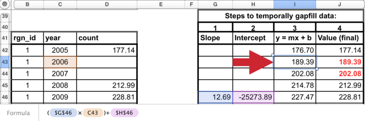
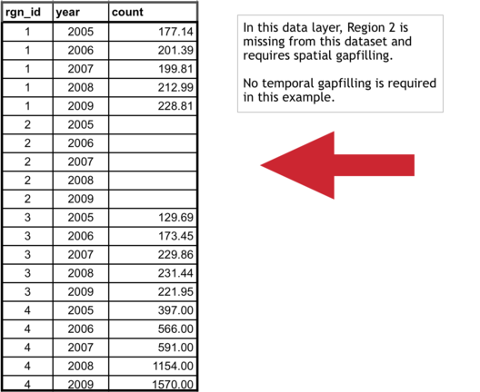
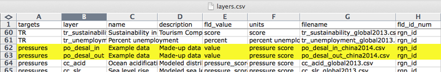

Introduction
Where you are in the OHI+ process
The OHI+ process consists of four phases. In the first phase, you learned about the OHI to understand the philosophy behind the goals and the motivation for conducting an assessment. In the second phase, you actively planned to conduct your OHI+ assessment. Now you will actively conduct the assessment by engaging with the work of finding the data, preparing the goal models, and taking the necessary steps to learn how to use the OHI Toolbox and related software to produce final scores. This is where the science of data discovery and goal model development comes in, with important emphasis on transparency, collaboration, and communication. In the final phase, you will communicate the findings and results of your assessment with others.
The OHI framework allows you to synthesize the information and priorities relevant to your local context and produce comparable scores. Because the methods of the framework are repeatable, transparent, quantitative, and goal-driven, the process of a carrying out an OHI+ assessment is as valuable as the final results.
The first completed assessment for a study area is valuable because it establishes a baseline and highlights the state of information quality and availability in an area. Any subsequent assessments carried out through time are also valuable because they can be used to track and monitor changes in ocean health. Your assessment will require careful thought and consideration along the way, and the OHI Toolbox and workflow facilitates collaboration and transparency. Transparency throughout the OHI workflow will help track the decisions made during assessment calculations and will enable repeatability for future assessments.
Each OHI+ assessment should have a clear purpose. One of the typical reasons for conducting an independent assessment is to inform policy and management decisions. Assessments can be more relevant to management when they are conducted at the spatial scales at which policy decisions are made, such as states, provinces, or counties. Regions and study area are terms that will be used throughout the assessment. The study area is the entire spatial boundary of your assessment, while the regions are the smaller subdivisions within the study area. In the OHI framework, goal scores are calculated for regions separately and then combined to produce an overall OHI score for each study area. The number of regions varies with each assessment’s study area; completed assessments have had between one and 220 regions.
The process of conducting an OHI+ assessment is as valuable as the final results. Documenting decisions made, as well as the challenges and successes encountered along the way, can lead to better understanding of the system, help inform management decisions, and guide future assessments to track changes through time.
When conducting an OHI+ assessment, it is important to include information that best represents your study area, and to make science-driven decisions and clearly document what was done and why. Your team should as creative and insightful as you can be while working within the bounds of informational and technical limitations.
There are key processes and considerations that will be a part of every assessment. Every assessment should ideally build from the lessons learned of previously completed assessments and identify what local characteristics need to be included in a study. This is done partly by comparing local characteristics to characteristics in previous assessments, including Global and OHI+ assessments. After you have outlined and identified local characteristics and priorities, you will gather information, prepare data, begin to develop models and set reference points, and then calculate scores. This will be done with the OHI Toolbox and workflow that will help you collaboratively organize and complete your assessment transparently, in part through your own OHI+ website that can be shared with other partners and collaborators. Above all, you should be prepared to know that this process takes time and is iterative, meaning that you often return to previous steps.
How long does an assessment take? Past assessments have taken between two and three years, with the time varying depending the size and composition of the team, the challenges encountered in discovering and gathering information, and how many models are redeveloped. The amount of data processing and goal model development needed before you will be able to use the Toolbox also affects the amount of time it takes to conduct the assessment. The skill sets of the team members and the amount of technical resources available are also hugely important factors. You should think about which team members are needed throughout the process, including R programmers and spatial analysts. It will take time for the technical team to become familiar with the OHI Toolbox and GitHub.
Outcomes of conducting an assessment
Your completed assessment will produce OHI scores for each goal for every region in your study area, and scores within the assessment can be compared with each other. These scores will not be quantitatively comparable to those of other OHI assessments because they differ in the underlying inputs, goal models, and reference points. The only quantitative comparisons can be made within an assessment’s study area, whether between regions or through time (following repeated assessments). However, qualitative comparisons between different OHI assessments can be made because the scores are an indication of how far a region is to achieving its own targets. For instance, if two study areas have scores of seventy and sixty-five, it should be interpreted that the first study area is closer to its management targets than the second is, but since these management targets are different (in addition to the underlying data and models), they cannot be quantitatively compared.
While final OHI scores are valuable information, the process of conducting an OHI assessment can be as valuable as the final results. This is because during an OHI assessment you will bring together meaningful ocean health information from many disciplines. In doing so, you will have a census of existing information and will also identify knowledge and data gaps. Further, conducting an OHI+ assessment can engage many different groups, including research institutions, government agencies, policy groups, non-governmental organizations, and both the civil and private sectors.
Best practices for OHI assessments
Conducting an assessment requires both an understanding of how past assessments have been completed and the innovation to capture important characteristics of your study area using the information available. You can start by understanding the structure of completed assessments at global and smaller scales and the models that were created. Understanding the approaches in different contexts will help you think about what should be done similarly and differently in your local context. Information, publications, and websites for completed OHI+ assessments are listed at ohi-science.org/projects, and example approaches for each goal are listed at ohi-science.org/goals.
The following Best Practices are from our publication Best practices for assessing ocean health in multiple contexts using tailorable frameworks which is important to read before beginning your assessment.
Maintain core values and characteristics within the assessment framework regardless of limited information quality
The assessment framework can be implemented using the best freely-available existing information, even if the information available is ‘limited’ or not ‘ideal’. ‘Limited’ information may be of low quality, have gaps, or be indirectly obtained through modeling instead of being directly measured. Different methods can be used to work with limited data, such as gap filling, incorporating indirect (proxy) or place-holder information, or using intermediate models.
Remaining true to the conceptual framework by using those methods, hence developing less-than-ideal goal models, provides a fuller picture than redesigning it to only include characteristics where ideal information is available. This is because all key characteristics in the system should be represented somehow in a comprehensive assessment, even if assumptions must be made to compensate for missing information. If these methods, including assumptions and rationales, are clearly considered and explained, completed assessments will not only provide the best possible picture of the current system but will also identify information gaps and highlight areas for improvement. Such scrutiny of available knowledge could be lost if important elements were simply excluded from the assessment due to imperfect representation.
Carefully document and share all decisions in writing and computational code
Documentation of all aspects of an assessment process is paramount to ensuring transparency of the decisions made, reproducibility and interpretation of results, repeatability to facilitate and compare future assessments, and the ease of communication throughout the process.
Detailed information about how the assessment is conducted will enhance its credibility and reproducibility. Decisions of why information was included and why models were developed in a certain manner are of great importance so that future assessments can incorporate the same logic and understanding of the system — or make improvements. Further, the type of workflow developed and software used to organize and process information will greatly affect the efficiency, transparency, and reproducibility of subsequent assessments. Providing public access to all such information, as well as input data and computational code is becoming the standard for scientific inquiry, so every effort should be made to achieve those aims.
This means documenting and sharing not only the tools and methods used but also the knowledge gained through the process based on decisions made, what was decided against (e.g. why information was included or excluded, and how it was processed), challenges encountered, and recommendations for improvement. Frank documentation about the successes and shortcomings makes for greater scientific credibility, enables others to replicate what was done, and allows for the most appropriate interpretations of the results, as well as the highest potential for future improvement of assessment approaches, and ultimately, management towards ocean health.
The OHI Toolbox
The OHI Toolbox is made to organize and process data, document decision making, calculate scores, and share results within or outside your team. It was created to facilitate score calculations as well as the organization of information and transparency of the entire workflow. The Toolbox is built with open-source, freely available software, particularly Github and RStudio.
Github and RStudio are a highly effective combination for your team to conduct your OHI+ assessment in a collaborative, transparent, and reproducible manner. RStudio is the coding environment for the programming language R and is where all the data processing, calculations, and writing are done. Github is a online version-control system where each change you save in RStudio is recorded through time and easily traceable. Multiple people can therefore collaborate on the same project and view the changes done by one another. Github also provides a platform for decision-making conversations, similar to email threads but better kept and organized.
Read APPENDIX 1: Toolbox Software for more details on their features, how they work together, and how to set them up your own computer.
Treat the toolbox as your notebook, calculator, and presentation of your work. No more endless email chains or passing spreadsheets back and forth! If someone wants to see where your data comes from, how you have processed the data, the rationale for including or excluding certain data, and how the scores are calculated, they can find the answers from your work. It increases the credibility and reproducibility of your assessment.
It also makes your technical team more stable.
The Toolbox will also preserve team memory. If there are personnel changes, it is easy for any new member to pick up where it was left when your data preparation has been documented clearly and kept in one place. It will also help your “future self”: months or years later you can revisit your work and understand what you have done.
Your Toolbox is organized into two sequential repositories where you will store all your work. They will be tailor-made for your OHI+ assessment upon request.
Starter Repository
In the Starter Repo, you will have one main prep folder, where you will organize and explore available data and finalize spatial boundaries while learning the Github/RStudio workflow. To be transparent and repeatable, all files should be written in R (or R Markdown).
Discovering and gathering input information
To promote transparent communication and aid in reproducibility, it is always a good practice to record information about data sources (i.e. ‘metadata’) and explanation of how they are processed in the script. For example, it is important to include:
- data source
- data url or website
- date accessed, contact information
- processing plan
A hallmark of the OHI is that it uses freely-available existing information (data and indicators) to create the models that capture the philosophies of individual goals. The quality of the inputs are important because calculated OHI scores area only as good as the inputs on which they are based, and it is important to identify what was included (and excluded). Assembling the appropriate input information, which means discovering, gathering, and processing data and indicators, is critical to any OHI assessment.
Reading Best practices for assessing ocean health in multiple contexts using tailorable frameworks can help you plan what information to look for. Then, after your team has tailored the OHI framework for your study area and identified the information that ideally would be included, the data discovery and gathering process can begin. There are many decisions to make when deciding which data are available and appropriate to include in your assessment. Finding appropriate data requires problem-solving abilities and creativity, particularly when ideal data are unavailable. You will need input information to calculate status models as well as pressures and resilience.
Thinking creatively
Humans interact with and depend upon the oceans in complex ways, some of which are easy to measure and others of which are harder to define. More familiar measurements include providing seafood, or disposing of waste. A less familiar measurement is how marine-related jobs affect coastal communities, or how different people receive or perceive benefits simply from living near the ocean. Thinking creatively and exploring the information available can make your assessment more representative of reality.
Data used in OHI assessments spans a wide array of disciplines beyond oceanography and marine ecology. It is important to think creatively and beyond the interests of a specific institution or one particular field of study. Therefore, it is necessary to look beyond the most known or obvious data sources to find data relevant for the goals in the study area. Discussions with colleagues, literature searches, emails to experts, and search engines are good ways to understand what kinds of data are collected and to hunt for appropriate data. Investigate what kinds of information are available from government and public records, scientific literature, academic studies, surveys and reports, etc.
Data sources
Existing data and indicators can be gathered from many sources across environmental, social, and economic disciplines. This includes government reports and project websites, peer-reviewed literature, masters and PhD theses, university websites, and information from non-profit organizations, among others.
All data must be rescaled to specific reference points (targets) before being combined with the Toolbox; therefore setting these reference points at the appropriate scale is a fundamental component of any OHI assessment. This requires your assessment team to capture the philosophy of each Index goal and sub-goal using the best available data and indicators. Indicators that are already scaled (e.g., from 0-1 or 0-10) can easily be incorporated into your assessment; they have already been scaled to some kind of identified target or reference point. Data that have not been scaled in most cases will need to be, whether this is by scaling to the maximum value in the range or to some other understood value. You should think about how you would rescale data during your search.
Because data and indicators will come from different sources, they will also have different formatting. To include these data and indicators in your assessment, you will need to process these files into the format required by the Toolbox, which is explained in the section Formatting Data for the Toolbox. When data have been prepared and formatted for the Toolbox, they are called layers. Because creating layers can be quite time-intensive, data should only be prepared for the Toolbox after final decisions have been made to include the data or indicator in your assessment, and after the appropriate goal model and reference points have been finalized.
Gathering responsibilities
Gathering appropriate data requires identifying and accessing existing data. It is important that team members responsible for data discovery make thoughtful decisions about whether data are appropriate for the assessment. Data discovery and acquisition are typically an iterative process, as there are both practical and philosophical reasons for including or excluding data.
Requirements for data and indicators
There are six requirements to remember when investigating (or ‘scoping’) potential data and indicators that are presented in this section. It is important that data satisfy as many of these requirements as possible. To meet these requirements, you may have use appropriate methods to fill gaps in the data set. Data sources may need to be excluded from the analyses if requirements are not met and gap-filling solutions are not possible. If data cannot be included, you may elect to use layers from the global assessment or identify other data or modeling approaches.
Relevance to ocean health
There must be a clear connection between the data and ocean health, and determining this will be closely linked to each goal model.
Accessibility
The two main points regarding accessibility are whether the source is open access and whether the data or indicators will be updated regularly.
The Index was created in the spirit of transparency and open-access, using open-source software and online platforms such as GitHub, is to ensure as much accessibility and open collaboration as possible. Data and indicators included should also follow these guidelines, so that anyone wishing to understand more about the Index may be able to see what data were used and how. For this reason we emphasize the importance of using data that may be made freely downloadable, as well as the importance of clearly documenting all decisions and reasons for the choices made in selecting data, indicators, and models.
Index scores can be recalculated annually as new data become available. This can establish a baseline of ocean health and serve as a monitoring mechanism to evaluate the effectiveness of actions and policies in improving the status of overall ocean health. This is good to keep in mind while looking for data: will it be available again in the future? It is also important to document the sources of all data so that it is both transparent where it came from and you will be able to find it in the future.
Quality
Understanding how the data or indicators were collected or created is important. Are they collected by a respected organization with quality control? Are there any protocol changes to be aware of? For instance, were there changes in the collection protocol to be aware of when interpreting temporal trends?
Reference point
Most data will need to be scaled to a reference point. As you consider different data sources it is important to think about or identify what a reasonable reference point may be. Ask the following types of questions as you explore data possibilities:
- Has past research identified potential targets for these data? For example, fisheries goal require a Maximum Sustainable Yield (MSY).
- Have policy targets been set regarding these data? For example, maximum levels of pollutants allowed in beaches.
- Would a historic reference point be an appropriate target? For example, the percent of habitat coverage before coastal development took place.
- Could a region within the study area be set as a spatial reference point? For example, a certain region is regarded as the leader in creating protected areas.
Appropriate spatial scale
Data must be available for every region within the study area. It is not always possible to fully meet the spatial and temporal requirements with each source. In these cases, provided that the gaps are not extensive, it can still be possible to use these data if appropriate gap-filling techniques are used (See: Formatting Data for Toolbox section).
Appropriate temporal scale
Data must be available for ideally the five most-recent years to calculate the recent trend. For some goals, where temporal reference points are desirable, longer time series are preferable.
The process of information discovery
The most important thing to remember when gathering data and indicators is that they must contribute to measuring ocean health. Not all information that enhances our knowledge of marine processes directly convey information about ocean health and may not be appropriate within the OHI framework. Because of this, compiled indicators can sometimes be more suitable than raw data measuring single marine attributes.
Whether you are working goal-by-goal, or layer by layer, it is important to consider where you can find synergies in data discovery. For example, while you are looking for information for the fisheries goal, you may also find data layers for fishing pressures, such as metrics on bycatch or trawling intensity. This will save you time and allow you to start thinking about how to rank pressures and resilience weights on your goals as well. Conceptually, it will help your team build a picture of how your goals are interlocking in a way that is reflective of the actual linkages that exist in the connected systems you are studying. Some key examples are listed below, and are further explained in the following sections.
You should begin by understanding and comparing the best approaches used in assessments that have been completed, including the global assessments (Halpern et al, 2012; 2013), Brazil (Elfes et al. 2014), Fiji (Selig et al., 2014), and the U.S. West Coast Assessment (Halpern et al., 2014). For OHI+ assessments, if finer-resolution local data were available in the study area, these data were either incorporated into modified goal models that used locally appropriate and informed approaches or into the existing global goal model. When local data were not available, the global-scale data and global goal models were used, which is least desirable because it does not provide more information than the global study.
When looking for data, the following decision tree may be useful when going goal-by-goal for discovering data and developing models:
Example: U.S. West Coast data discovery
Below are examples of some decisions made when exploring available data for the U.S. West Coast assessment. Determining whether certain data could be included began with a solid understanding of the layers and models included in the global assessment. Since the U.S. West Coast is a data-rich region, finer-resolution local data could be used in place of many of the global data layers. The U.S. West Coast assessment had five regions: Washington, Oregon, Northern California, Central California, and Southern California.
There are a lot of existing data that contribute to our scientific understanding of ocean processes and interactions but are not ideal for the OHI. Reasons to exclude data are both due to practical requirements (e.g., spatial or temporal resolution) and philosophical requirements (i.e., they do not help capture the attributes of interest for assessing ocean health). Some common reasons for excluding data are:
The data do not cover the entire area of the reporting region. The state of California had excellent, long-term data on public attendance at state parks that would have been quite useful in the calculation of the tourism and recreation goal. However, data were only available for three of the five regions (the three California regions but not Oregon and Washington), so they could not be used.
There is not a clear and scientifically observed relationship between the data and ocean health. Along the U.S. West Coast, kelp beds are a very important habitat because of their contribution to biodiversity and coastal protection. However, kelp coverage variation is driven primarily by abiotic natural forcing (wave or storm disturbance and temperature) and thus is not a good indicator of kelp forest health, particularly in the case of anthropogenic impacts. For these reasons kelp coverage was not included in the assessment.
The feature being measured may provide benefits to people, but this feature is not derived from marine or coastal ecosystems. Sea walls and riprap provide coastal protection to many people along the U.S. West Coast. However, these structures are not a benefit that is derived from the marine ecosystems, so only coastal habitats were included in the calculation of this goal. These data can be included as a pressure due to habitat loss. They were not used as a resilience measure because they can often have negative side effects (e.g., by altering sedimentation dynamics), and because they have limited long-term sustainability (i.e., they need maintenance).
Data collection is biased and might misrepresent ocean health. The U.S. Endangered Species Act identifies a species list focused on species of concern within the US. As such, these data are biased in the context of ocean health since they only assess species whose populations may be in danger. For the calculation of the biodiversity goal, using these data would be inappropriate because this goal represents the status of all species in the region, not just those that are currently of conservation concern. Using these data may have shown the status of biodiversity to be lower than it really is because the selection of species to assess was already biased towards species of concern.
Time series data are not long enough to calculate a trend or a reference point (when a historical reference point is most appropriate). For the U.S. West Coast, the current extent of seagrass habitats was available, however, these do not exist for previous points in time in most areas, so could not be used to calculate the trend or set a historical reference point. Therefore, we estimated the trend in health of seagrass habitats using as a proxy the trend in the main stressor (i.e., turbidity). In other words, we assumed that the rate of seagrass loss was directly proportional to the rate of increase in turbidity. Similar solutions may be used to estimate trends in your own assessment, if there is scientific support for assuming that the trend of what we want to assess (or the relationship between the current state and the state in the reference year) has a strong relationship with the trend of the proxy data available.
Formatting Data for the Toolbox
The OHI Toolbox expects each data layer to be - in its own .csv file, - with data available for every region within the study area, - with data organized in ‘long’ format (as few columns as possible), and - with a unique region identifier (rgn_id) associated with a single score or value.
As you discover and gather potential data sources, they can be prepared and explored in the Starter Repo. Data preparation is done in R using input data stored in .csv files (or ‘comma-separated value’). These files can be opened as a spreadsheet using Microsoft Excel or similar programs. Each data layer (data input) has its own .csv file, which is combined with others within the Toolbox for the model calculations. These data layers are used for calculating goal scores, meaning that they are inputs for status, trend, pressures, and resilience. The global analysis included over 100 data layer files, and there will probably be as many in your own assessments. This section describes and provides examples of how to format the data layers for the Toolbox.
It is highly recommended that layer preparation occurs in your repository’s prep folder as much as possible, as it will also be archived by GitHub for future reference. The folder is divided into sub-folders for each goal and sub-goal, where you will upload the raw data and manipulate the data in data_prep.R scripts.
OHI goal scores are calculated at the scale of the reporting unit, which is called a ‘region’ and then combined using an area-weighted average to produce the score for the overall area assessed, called a ‘study area’. In order to calculate trend, input data should be available as a time series for at least 5 recent years (and the longer the time series the better, as this can be used in setting temporal reference points).
Finalized data layers have at least two columns: the rgn_id column and a column with data that is best identified by its units (eg. km2 or score). There often may be a year column or a category column (for natural product categories or habitat types).
The example below shows information for a study area with 4 regions. There are two different (and separate) data layer files: tourism count (tr_total.csv) and natural products harvested, in metric tonnes (np_harvest_tonnes.csv). Each file has data for four regions (1-4) in different years, and the second has an additional ‘categories’ column for the different types of natural products that were harvested. In this example, the two data layers are appropriate for status calculations with the Toolbox because:
- At least five years of data are available,
- There are no data gaps
- Data are presented in ‘long’ or ‘narrow’ format (not ‘wide’ format – see “Long Formatting”" section).
Gapfilling
It is important that data prepared for the Toolbox have no missing values or ‘gaps’. Data gaps can occur in two main ways: 1) temporal gaps: when several years in a time series in a single region have missing data, and 2) spatial gaps: when all years for a region have missing data (and therefore the whole region is ‘missing’ for that data layer).
How these gaps are filled will depend on the data and regions themselves, and requires thoughtful, logical decisions to most reasonably fill gaps. Each data layer can be gapfilled using different approaches. Some data layers will require both temporal and spatial gapfilling. The examples below highlight some example of temporal and spatial gapfilling.
All decisions of gapfilling should be documented to ensure transparency and reproducibility. The examples below are in Excel, but programming these changes in software like R is preferred because it promotes easy transparency and reproducibility.
Temporal gapfilling
Temporal gaps occur when a region is missing data for some years. The Toolbox requires data for each year for every region. It is important to make an informed decision about how to temporally gapfill data.
Often, regression models are the best way to estimate data and fill temporal gaps. Here we give an example that assumes a linear relationship between the year and value variables within a region. If data do not fit a linear framework, other models may be fit to help with gapfilling. Here we give an example assuming linearity.
Using a linear model can be done in most programming languages using specific functions, but here we show this step-by-step using functions in Excel for Region 1.
Temporal gapfilling example (assumes linearity: able to be represented by a straight line on a graph)):
There are four steps to temporally gapfill with a linear model, illustrated in the figures with four columns.
1. Calculate the slope for each region
The first step is to calculate the slope of the line that is fitted through the available data points. This can be done in Excel using the SLOPE(known_y’s,known_x’s) function as highlighted in the figure below. In this case, the x-axis is years (2005, 2006, etc…), the y-axis is count, and the Excel function automatically plots and fits a line through the known values (177.14 in 2005, 212.99 in 2008, and 228.81 in 2009), and subsequently calculates the slope (12.69).
2. Calculate the y-intercept for each region
The next step is to calculate the intercept of the line that is fitted through the available data points. This can be done in Excel similarly as for the slope calculation, using the the INTERCEPT(known_y’s,known_x’s) function that calculates the y-intercept (-25273.89) of the fitted line.
3. Calculate y for all years
The slope and y-intercept that were calculated in steps 1 and 2 can then be used along with the year (independent variable) to calculate the unknown ‘y-values’. To do so, simply replace the known three values into the y = mx + b equation (m=slope, x=year, b=intercept), to calculate the unknown ‘count’ for a given year (189.39 in 2006, and 202.08 in 2007).

4. Replace modeled values into original data where gaps had occurred
Substitute these modeled values that were previously gaps in the timeseries. The data layer is now ready for the Toolbox, gapfilled and in the appropriate format.
Spatial gapfilling
Spatial gaps are when no data are available for a particular region. The Toolbox requires data for each region. It is important to make an informed decision about how to spatially gapfilling data.

To fill gaps spatially, you must assume that one region is like another, and data from another region is adequate to be substituted in place of the missing data. This will depend on the type of data and the properties of the regions requiring gapfilling. For example, if a region is missing data but has similar properties to a different region that does have data, the missing data could be ‘borrowed’ from the region with information. Each data layer can be gapfilled using a different approach when necessary.
Characteristics of regions requiring gapfilling that can help determine which type of spatial gapfilling to use:
proximity: can it be assumed that nearby regions have similar properties?
study area: are data reported for the study area, and can those data be used for your regions?
demographic information: can it be assumed a region with a similar population size has similar data?
Spatial gapfilling example:
For a certain data layer, suppose the second region (rgn_id 2) has no data reported, as illustrated in the figure above. How to spatially gapfill rgn_id 2 requires thinking about the properties and characteristics of the region and the data, in this case, tourist count.
Here are properties that can be important for decision making:
rgn_id 2:
- is located between rgn_id 1 and 3
- is larger than rgn_id 1
- has similar population size/demographics to rgn_id 3
- has not been growing as quickly as rgn_id 4
There is no absolute answer of how to best gapfill rgn_id 2. Here are a few reasonable possibilities:
Assign rgn_id 2 values from:
- rgn_id 1 because it is in close proximity to rgn_id 2
- rgn_id 3 because it is in close proximity to rgn_id 2 and has similar population size/demographics
- rgn_id 1 and 3 averaged since they are in close proximity to rgn_id 2
Suppose the decision was made to gapfill rgn_id 2 using the mean of rgn_id 1 and 3 since this would use a combination of both of those regions. Again, other possibilities could be equally correct. But some form of spatial gapfilling is required so a decision must be made. The image below illustrates this in Excel.
The data layer is now ready for the Toolbox, gapfilled and in the appropriate format.
Rescaling your data
An important consideration is how to rescale your data when preparing it for use in the Toolbox. Rescaling involves turning a distribution of data into a value from zero to one. This is based on finding a highest observed or theoretical point in the distribution of the data, and from there, the relative value of the data can be calculated.
Example: Global Data Approach
You should base your decision on whether your consider it more appropriate to decide the reference point based on the data distribution of all data points, be they observed or interpolated, or whether we think we should only consider the observed data. If the interpolation covers large areas, and these get assigned values that aren’t very frequent in the observed data, then the two distributions will be very different, and what value is in the 99.99th percentile is different too.
In theory, one would favor deciding the reference point based on as many observations as possible (i.e., interpolate first, then obtain the percentile). In practice, if we think that large interpolated areas are very unreliable, we might prefer to use real observations only (i.e., percentile first, then interpolate).
Naming data layers
Please name each data layer with the following format so it is easy to keep all data organized:
prefix_layername_regionYEAR_suffix.extension
There cannot be any white spaces in any part of the filename: instead, use underscores (’_’).
The prefix will be the letters identifying each goal (two letters) or sub-goal (three letters):
| Food Provision |
FP |
Fisheries |
FIS |
|
|
Mariculture |
MAR |
| Artisanal Fishing Opportunity |
AO |
|
|
| Natural Products |
NP |
|
|
| Coastal Protection |
CP |
|
|
| Carbon Storage |
CS |
|
|
| Livelihoods and Economies |
LE |
Livelihoods |
LIV |
|
|
Economies |
ECO |
| Tourism and Recreation |
TR |
|
|
| Sense of Place |
SP |
Iconic Species |
ICO |
|
|
Lasting Special Places |
LSP |
| Clean Waters |
CW |
|
|
| Biodiversity |
BD |
Habitats |
HAB |
|
|
Species |
SPP |
The layername should be made of words or abbreviations to identify what the layer is (eg. unemployment)
The regionYEAR should identify the assessment scenario: chn2015. This will help separate updated data layers from global data layers (‘glYEAR’).
The suffix of the filename should identify who prepared the data so any questions can easily to sent to the correct person (eg. JL).
The extension identifies the filetype and is separated by a period (.). You must save your files as comma separated values (.csv) since this is the format used by the OHI Toolbox.
Here is an example of a properly named data layer for the tourism and recreation goal, where the data are the percent of unemployment prepared by Julia Lowndes.
tr_unemployment_chn2015_JL.csv
Defining spatial boundaries
Spatial boundaries of your assessment regions dictate how your data will be aggregated or disaggregated, and are required for getting a Full Repository. OHI scores are calculated for each assessment region, and the region boundaries will be used to aggregate or disaggregate input information reported at different spatial scales. There is no limit to the number of regions in your assessment. However, the number of regions is usually constrained by two things: data availability for those regions, and the utility of having scores calculated for those regions. Ideally, boundaries are drawn per management jurisdiction, and are informed by the scale at which information is available.
The Starter Repository will help you organize preliminary data and make sure data availability matches your desired region assignments. Once you’ve defined your regions and drawn spatial boundaries, the OHI team can create a Full Repository for your assessment.
Balancing geopolitical boundaries and data limitation
The spatial boundaries of OHI regions are typically set based on:
- Management boundaries: geopolitical boundaries, where policy decisions are made (countries, provinces, etc)
- Biogeographic boundaries: based on natural geography (bay, seas, gulf, etc)
- Data: information availability (spatial scale where are data collected)
OHI utilizes data from dozens to >100 data layers collected by many agencies. Some data are collected within boundaries suitable for your desired geopolitical boundaries. Often they are not. For example, you may wish to assess ocean health for each of the ten states along the coast. However, some measurements are taken on the national level and it is difficult to disaggregate data to the state level, or some measurements might only make sense at the watershed level across a few states.
Data disaggregation and gap-filling are possible methods of dealing with missing data, but can dilute the information quality within your assessment. If many data layers don’t fit your desired boundaries, you may consider changing your boundaries. Exploring the data sources in the Starter Repo can help you balance jurisdictional boundaries and information availability, and finalize spatial boundaries that make the most sense for the purpose of your assessment.
Note that the OHI does not take a stance on disputed territories. The boundaries are defined by the original map data providers.
Drawing spatial boundaries
Regions must be unique (non-overlapping), and boundaries must be drawn offshore. Offshore boundaries should be made with spatial methods in order to extend boundaries from those designated on land.
Spatial boundaries must be drawn with geographic information system (GIS) mapping software such as ArcGIS, QGIS, or GRASS. You will need someone with GIS skills to create a shapefile that will be used by the Toolbox to display your information. The shapefile will also be used to extract information for each of your defined regions when data are reported in raster format for a different area. For more information see Wikipedia for Geographic information systems and Shapefiles.
Illustrated below are the conceptual steps required for creating a spatial file with your offshore boundaries. You will ultimately decide where to draw the offshore boundaries. The example below shows a simple example of extending the land boundaries in a straight line; you should consult with a GIS specialist to make sure any extensions make sense with the coastline and natural features, and also make sure they does not conflict with important jurisdictional boundaries.
Data for different goals often cover different spatial extents offshore. For example, Fisheries might use data from the entire EEZ, while Carbon Storage might only cover 3nm from shore. When mapped, OHI scores do not show different spatial extents, but instead show all to the greatest spatial extent. Exclusive Economic Zone (EEZ) boundaries are most often the greatest extent offshore that OHI scores will represent. These regional spatial boundaries do not affect data preparation and analyses, where you could use any spatial extent appropriate for each goal.
One possible method is to create boundaries with Thiessen Polygons, and we provide a Python script that can be used, but it requires ArcGIS. The Python script and further details can be found here.
To create a repository for your assessment, we just need the off-shore marine water boundaries. But you may also make inland buffers for your analyses. For example, do you want coastal population to include activities within 1km of the coast? Or 10km?
Request a Full Repository with offshore boundaries
In order to create a Full Repository for your assessment, we will need the shapefile for your offshore boundaries (and the name of your scenario, which is to the unit of your assessment and the year, for example, province2016). This will help us disaggregate global data to your local regions and populate usable data layers. Please send a .zip file of all files produced to _info@ohi-science.org_. Files with the following extensions are required (but you can send all files):
The .dbf file needs the following in its attribute table:
- rgn_id (unique numeric region identifier)
- rgn_name (unique named region identifier)
- area_km2 or area_hectare (area in km2 or hectares)
Developing Goal Models, Reference Points, and Pressures and Resilience
Once you have determined which goals are assessed and have begun searching for data and indicators, you can start to develop goal models and set reference points. The decision tree of the data discovery process also applies here: first consider how goals can be tailored to your local context before you consider replicating what was done in the Global Assessments. It is always better to use local goal model and reference point approaches where possible. This section aims to provid you with goal-by-goal guidance on how to find data, pick indicators, set reference point, and develop the model, as well as guideline on how to think about pressure and resilience. But first, let’s see some general tips before diving into the details of each goal model.
Developing multiple goal models at the same time
Goals can be assessed independent of one another. As each goal model is developed and data gathered, it can be assessed without affecting other goals.
However, you can develop some goal models simultaneously and streamline the data search. For example, the habitat-based goals Carbon Storage, Coastal Protection, and the Habitats sub-goal of Biodiversity all rely on the same underlying data, and their models can be developed together. A spatial analyst can create the spatial layers used for these goals with the same source material. This will greatly expedite your data layer preparation. Species data for Iconic Species sub-goal of Sense of Place is often a subset of data from Species sub-goal of Biodiversity. Data for non-food marine products for Natural Products and food products for Fisheries sub-goal of Food Provision are often recored in similar data sources and may need partitioning.
If you wish to further coordinate these activities on a higher level, you could have the same team member coordinate activities for the development of certain goals. That is a consideration when assembling your team and planning your workflow. For more details, please see the goal-specific sections.
Keeping Reference Points in Mind
Setting a reference point is required for every goal model you develop. It is an “ideal” condition, or target, where the goal is considered to be achieved to its full potential. Achieving or exceeding the reference point will result in a score of 100. The choice of a reference point will thus affect how the final scores are calculated, and must be balanced between knowledge of the system, expert judgment, and limitations of the data. You may set an universal reference point for all regions in your study area, or you may set a unique reference point for each region.
Generally there are four types of reference points: + Functional: Scientifically sound target set based on the known responses of variables measured, such as Maximum Sustainable Yield. + Temporal: A historical benchmark is used as a the “ideal” point in the past, such as mangrove coverage in the 1980’s. + Spatial: A region within the study area with the highest input values, and all others are scaled to it. + Established target: Such as a sustainable catch yield by a certain year, or the number of people employed in a marine sector by a certain year.
Which type of reference point to use depends on the goal and available data. How many years of data are available? Can you set a temporal reference point with these data, or do you have to find another dataset or other source of information? In any case, you must balance being realistic with being ambitious. We suggest following the S.M.A.R.T. criteria when choosing a reference point: “Specific,” “Measurable,” “Ambitious,” “Realistic,” and “Time-bound.”
You will learn more, and think more critically about reference points, as you develop the data layers for your assessment.
How to use the reference point in a model
It’s best to explicitly include the reference point in the model equation whenever possible. For example, the Carbon Storage goal model in the global assessment is written like this:
 ,
,
where Cr is the reference condition of each habitat. See goal-specific sections for more examples.
Identifying pressures and resilience
While you are developing goal models, you should note the links between your goals and pressures and resilience: both the pressures and resilience that affect them and whether the goal acts as pressure or resilience on other goals. It is recommended to begin gathering data of pressure and resilience from the start of the assessment. The team members who are developing specific goals should think about the pressures that act upon those goals as they are data-gathering, and they should think about the data sources that could provide pressures information. However, it may be most useful when one team member gathers all of the data for pressures, since the same pressures often affect multiple goals. See Pressure and Resilience section of this chapter for more information.
Some pressure data are the same or closely-related to data for goals. For example, the Wild-Caught Fisheries goal model requires catch data, which may be the same data source for information on commercial high- and low-bycatch data, which are used as pressures layers that affect Livelhoods and Economies and Biodiversity. In global assessments, the Clean Waters goal is very much linked to pressures layers because the input layers for its status are used as pressure layers. Trash pollution is a pressure that affects Tourism and Reacreation, Lasting Special Places, Livelihoods and Economies, and Species. It is important to remember these linkages as you go through the data discovery process.
You should also start searching for pressures data independent from data for goals. An example would be how climate change impacts will appear in various places in your assessment. Climate change pressures layers can include UV radiation, sea surface temperature (SST), sea-level rise (SLR), and ocean acidification, and these impacts might affect such goals as Natural Products, Carbon Storage, Coastal Protection, Sense of Place, Livelihoods and Economies, and Biodiversity. These linkages will become more clear as you go through the OHI+ assessment process.
Modifying goal models
After you have registered the data layers for a goal and created a goal model, you are ready to calculate the status and trend of this goal in functions.r.
Within functions.r, each goal is unique and set up as a function (ie.AO = function(inputs){equations}):
- sub-goals (eg. HAB) and goals without sub-goals (eg. CS) have functions that read in data layers (eg.
HAB = functions(layers)) and return scores for that goal or sub-goal
- supra-goals, or goals with sub-goals (eg. FP) have functions that read in sub-goal scores (eg.
BD = function(scores)) and calculate scores for the supra-goals
functions.R is pre-loaded with r codes from the most recent OHI-Global assessment as a reference. You can run through the reference script line-by-line to learn how it has been done. For your own assessment, you may choose to delete the entire function and rewrite it completely, or you can borrow most, if not all, of the existing script. Either way, make sure you first identify the parameters to call, either layers or scores.
To modify the goal models, open conf/functions.R and go to the appropriate goal section. You will do the following sequence of events:
- load ohicore and check data layers (
configure_toolbox.r)
- load data (
functions.r)
- calculate status scores (
functions.r)
- calculate trend scores (
functions.r)
- combine status and trend scores (
functions.r)
- confirm how the function is called (
goals.csv)
Tip: Check that you have installed the latest versions of R and RStudio before starting. If an unexplained error occurs during calculation, it could be due to a software update, which happens every month or two. Sometimes simply updating your software could fix the error.
1. Load ohicore and check data layers
Run (or source) configure_toolbox.r to load ohicore and check data layers.
2. Load data
The example below is modified from the AO function in OHI-Global 2015.
- Select data layers. (Note that the layer names are what was set up in
layers.csv. Now the toolbox will look for those layers)
## select data layers using ohicore::SelectLayersData
layers_data = SelectLayersData(layers, targets='AO')
- Rename columns & combine layers into one data frame.
r <- layers_data %>%
filter(layer == 'ao_access') %>%
select(region_id=id_num, access=val_num)
ry <- layers_data %>%
filter(layer == 'ao_need') %>%
select(region_id = id_num, year, need=val_num) %>%
left_join(r, by="region_id")
3. Calculate Status
Calculations are done using the goal model across all years. Select the result of the most recent year as the goal status.
ry <- ry %>%
mutate(Du = (1 - need) * (1 - access)) %>%
mutate(statusData = (1 - Du) * Sustainability)
r.status <- ry %>%
filter(year == status_year) %>%
select(region_id,
statusData) %>
mutate(status = statusData*100)
summary(r.status); dim(r.status)
4. Calculate Trend
Trend is typically calculated as the linear trend of the most recent five years of status.
## minimum year here for illustration; it is based on data available
year_min = 2011
r.trend <- ry %>%
filter(year >= year_min) %>%
filter(!is.na(statusData)) %>%
group_by(region_id) %>%
arrange(year) %>%
top_n(5, year) %>%
ungroup()
r.trend <- r.trend %>%
group_by(region_id) %>%
do(mdl = lm(statusData ~ year, data=.)) %>%
summarize( region_id = region_id,
trend = coef(mdl)['year']*5) %>%
ungroup()
5. Combine Status and Trend
Assemble status and trend scores into one data frame. Your results would contain four columns: region_id, score, dimension, and goal.
Don’t forget to return(scores)!
scores = r.status %>%
select(region_id, score=status) %>%
mutate(dimension='status') %>%
rbind(
r.trend %>%
select(region_id, score=trend) %>%
mutate(dimension='trend')) %>%
mutate(goal='AO')
return(scores)
6. Update goal call in goals.csv
goals.csv in the conf folder provides input information for functions.r, particularly about function calls. These are indicated by two columns: preindex_function (functions for all goals that do not have sub-goals, and functions for all sub-goals) and postindex_function (functions for goals with sub-goals).
In the preindex_fuction, you could specify variables such as status_year and trend_year, which you can call in your goal function. Note that it is not necessary to specify those variables. If you do not use them in your function as in the CS example, you could delete those variables in preindex_function.
Changing goal weights will be done here by editing the value in the weight column. Weights do not need to be 0-1 or add up to 10; weights will be scaled as a proportion of the number of goals assessed. The ten goals are weighted equally by default.
Modifying Pressures and Resilience
Pressures and Resilience are two of the four dimensions used to evaluate each goal or sub-goal, along with Status and Trend.
It is important to identify the pressures that affect the ocean and coastal systems in your study area, and to search for additional pressures not included in global assessments. Once you have identified pressures within your study area, you should identify what resilience measures could counteract those pressures. Alternatively, you can start with a list of known resiliences, such as the relevant environmental laws in your country, and them map them onto pressure layers.
TIP: The same considerations and requirements about data presented in the “Gathering Appropriate Data” section and in the Best practices for assessing ocean health in multiple contexts using tailorable frameworks publication also apply to pressures and resilience. Every measure you include for pressures and resilience requires data for each region in your assessment.
Ideally, every pressure with an identified strong impact should have a corresponding resilience measure. The rationale is that as resiliences in the study area increase (for instance, by improving environmental regulations), they would balance out and eventually neutralize the pressures. In time, this would lead to an increase in a goal’s status, and therefore the overall goal or sub-goal score. By including regulatory responses in your assessment, you ensure that the actions taken in your country are relevant to ocean health.
In practice, however, the pressures and resilience measures you include in your assessment will be highly determined by data availability. It is best to first consider what pressures are acting in your study area and then determine if data are available to measure them. You should also decide if the pressures data included in the global assessment are relevant for your assessment and determine if local data better capture pressures for all the regions in your study area. When considering resilience measures, look for regulations or indicators that could be encompassed in one of the pressures categories.
Pressures
How to identify and quantify pressures
The Toolbox calculates pressures in five ecological pressure categories (e.g., pollution, habitat destruction, fishing pressure, species pollution, and climate change) and one social pressure category (e.g. strength of governance). Under each category, there can be multiple pressure data layers. For example, the “pollution” category could include pathogen, nutrients, and chemical pollution.
The reason behind the ecological categories is to avoid hidden weighting (e.g., overrepresentation of pressures for which there are more data). For example, in the global assessment there were many pollution datasets available, but few distinct habitat destruction datasets. If we simply averaged the scores of each individual stressor, pollution scores would have a greater influence on the results (stronger weight) due to the relative higher availability of measurements of various pollutants. Instead, aggregating by pressure categories ensures that different stressor types influence the score explicitly. Nonetheless, the scores are combined in a cumulative way within each category to account for the fact that multiple stressors within a category have a cumulative impact that is greater than if only one of the stressors were present. The resulting scores for the five ecological categories are averaged to produce a single ecological pressures score. This score is then averaged with the social pressures score to produce the final overall pressure score.
There are two types of pressures data you need to provide for the toolbox: data layers for each pressure and the pressure matrix.
Pressures data layers
The pressures you will include in your assessment will depend on what is important in your study area and what data are available. If local pressures data are not available, you may default to using data from the global assessment, but this means in most cases that you will not have different information for each region. You will determine the weight ranks required in the pressures matrix only after you have identified the data you will include.
The following steps outline the process of how to identify pressures in your assessment. The steps are iterative; return to previous steps to ensure you capture all important pressures in your study area:
- Begin by exploring pressures important to your study area. What are big stressors acting along your coastlines?
- Are data available to measure these stressors? If not, are other indirect measures or proxies available to represent these stressors?
- Evaluate the pressures included in the global assessment. For example, if there is no mariculture in your study area, you could remove pressures data layers that only affect this goal (i.e. genetic escapes).
- Also while examining the pressures included in the global assessment, are all of them relevant? Are there local data that can be substituted in the place of global data?
- Determine the pressure category for any additional stressors in your study area, and add it to the pressures matrix.
- When all stressors are included in the pressures matrix, determine which goals they affect. Then, for each goal, determine the weight rankings of all stressors. Use literature and expert judgement to determine this.
- Prepare each pressure data layer as described in the Formatting Data for the Toolbox section only after steps 1-6 are completed. In addition to the proper formatting for the Toolbox, pressures data must be rescaled (normalized) on a unitless scale from 0 - 1, where 0 is no stressor at all and 1 is the highest possible value for the stressor. You will have to determine how to rescale the data, whether it is based on the highest value in the data range or other methods.
Including pressures from global assessments
If you are not able to find local data for stressors, you may use the data from the global assessments. For most of the stressors, this means that there will not be differences between the regions within your study area. However, several stressors included in the global assessment are based on spatial data at high resolution from previous work by Halpern et al. (2008) in Science: A global map of human impact on marine ecosystems. These data are available at a resolution of 1 km^2 for the entire global ocean, and can be extracted for the regions in your study area. The stressors available at 1km^2 resolution are indicated below with ** ** **.
Table of pressures layers and descriptions
| cc_acid** |
Ocean acidification |
| cc_slr** |
Sea level rise |
| cc_sst** |
Sea surface temperature (SST) anomalies |
| cc_uv** |
UV radiation |
| fp_art_hb |
High bycatch caused by artisanal fishing |
| fp_art_lb |
Low bycatch caused by artisanal fishing |
| fp_com_hb |
High bycatch caused by commercial fishing |
| fp_com_lb |
Low bycatch caused by commercial fishing |
| fp_targetharvest |
Targeted harvest of cetaceans and sea turtles |
| hd_intertidal |
Coastal population density as a proxy for intertidal habitat destruction |
| hd_subtidal_hb |
High bycatch artisanal fishing practices as a proxy for subtidal hard bottom habitat destruction |
| hd_subtidal_sb |
High bycatch commercial fishing practices as a proxy for subtidal soft bottom habitat destruction |
| po_chemicals** |
Ocean-based chemical pollution |
| po_chemicals_3nm** |
Land-based chemical pollution |
| po_nutrients** |
Ocean nutrient pollution |
| po_nutrients_3nm** |
Coastal nutrient pollution |
| po_pathogens |
Access to improved sanitation as a proxy for pathogen pollution |
| po_trash |
Trash pollution |
| sp_alien |
Alien species |
| sp_genetic |
Introduced species as a proxy for genetic escapes |
| ss_wgi |
Weakness of governance indicated with the WGI |
Note that chemical and nutrient pollution have both land-based (within 3 nautical miles) and ocean-based (within the entire 200 nautical mile EEZ) elements. This is because how pollution affects different goals will depend on the spatial scale of the goal’s activity. Some goals occur far from shore, and nutrient and chemical pollution should be included for all offshore waters; for example FIS, MAR, ECO, and SPP. However, some goals are really only relevant nearshore, so nutrient and chemical pollution should only be included close to the shoreline (3nm in the global study): AO, CS, CP, TR, ICO, LSP, HAB.
These distinctions won’t always apply for smaller-scale assessments. For example, the US West Coast study (Halpern et al. 2014) did not distinguish between offshore and 3nm and therefore only used the po_nutrients data layer.
Some pressure data are the same or closely-related to data for goals, often due to data limitations. For example, the Wild-Caught Fisheries goal model requires catch data, which may be the same data source for information on commercial high- and low-bycatch data, which are used as pressures layers that affect Livelihoods and Economies and Biodiversity. In global assessments, the Clean Waters goal is very much linked to pressures layers because the input layers for its status are used as pressure layers. Trash pollution is a pressure that affects Tourism and Recreation, Lasting Special Places, Livelihoods and Economies, and Species. It is important to remember these links as you go through the data discovery process.
You should also start searching for pressures data independent from data for goals. An example would be how climate change impacts will appear in various places in your assessment. Climate change pressures layers can include UV radiation, sea surface temperature, sea-level rise, and ocean acidification, and these impacts might affect such goals as Natural Products, Carbon Storage, Coastal Protection, Sense of Place, Livelihoods and Economies, and Biodiversity. These links will become more clear as you go through the OHI+ assessment process.
Pressures matrix
Independent from the pressures data layers, you will modify the Pressures Matrix table that establishes the relationships between stressors and goals, i.e. how each pressure measure affects each goal, or distinct components of a goal (e.g. an individual habitat type or natural product). It uses a rank from 1-3 to weight how strongly a given pressure affects a goal or sub-goal relative to all the other pressures affecting it.
It is easy to confuse the weights with pressure data layers. But pressure weights assigned in the pressures matrix are based on how strongly those pressures affect each goal; the weights are not different across regions (region-specific data are stored in the data layers). Read on for further explanation.
The rank weights used in the pressures matrix were determined by Halpern et al. 2012 (Nature) based on scientific literature and expert opinion (see Supplemental Table S28 of Halpern et al. 2012). For example, commercial high and low bycatch are categorical values that were set based on fishing gear type. This began as a list of gear types used, producing a range of potential bycatch frequencies (from local reports when possible), which can be rescaled. In the pressures matrix ranks are categorized as follows:
- 3 = high pressure
- 2 = medium pressure
- 1 = low pressure
Stressors that have no impact are left blank in the matrix rather than being assigned a rank of zero, which would affect the average score. Pressures are ranked rather than being represented as a binary (yes/no) measure because the range of consequence of different pressures on each goal can be quite large, and to classify all those pressures as a simple ‘yes’ would give too much influence to the weakest stressors. For example, food provision could be most heavily impacted by unsustainable, high-bycatch fishing, but pollution does have some impact on fish populations. Without a weighting system, these stressors would be treated equally in their impact on the food provision goal. In the figure above, a climate change pressure is the strongest variable acting on the Fisheries sub-goal.
How are Pressures calculated in the Toolbox?
Conceptually, pressures in OHI can be represented by three-dimensional matrix by combining the pressures matrix with each associated data layer. The Toolbox will: 1. For each stressor, multiply the local data for each region (between 0 and 1) by the weight (NA, 1, 2, or 3) assigned to that pressure for a specific goal and subgoal 2. Within each category, combine all stressor data from step 1 to get a category score 3. Average scores of all categories to get an overall pressures score for that goal or sub-goal
How to modify Pressures Matrix and Categories in the Toolbox
Your team will identify if any pressures layers should be added to the pressures matrix, and if so, which goals the pressure affects and what weight they should have. You can transfer this information in pressures_matrix.csv (located in the [assessment]/[region_year]/conf folder). It is important to note that the matrix identifies the pressures relevant to each goal, and which weight will be applied in the calculation. Each pressure is a data layer, located in the [assessment]/[region_year]/layers folder. This means that pressure layers need information for each region in the study area, and some layers will need to be updated with local data. In modifying pressures, you will need to consider whether data layers can be updated or added, and whether data layers map onto goals appropriately in the local context.
Adding a new pressure to the pressures matrix requires the following steps:
- Create new pressure layer(s) and save in the
layers folder
- Register pressure layer(s) in
layers.csv
- Register in
pressures_categories.csv
- Register in
pressures_matrix.csv, identify the goals affected and set the weights
- Modify
config.R for goals that have elements
Create the new pressure layers and save in the layers folder
If you create a new data layer, give it a short but descriptive name that also includes a prefix that signifies the pressure category (for example: po_ for the pollution category). There are five physical categories and one social category:
- po_ = pollution
- hd_ = habitat destruction
- fp_ = fishing pressure
- sp_ = species pollution
- cc_ = climate change
- ss_ = social pressure
So for example, po_trash is a pollution layer with trash on beaches, and sp_alien is species pollution due to alien (invasive) species.
These new layers will have scores from 0 to 1, with values for each region in your study area, and will be saved in the layers folder.
Register the new pressure layers in layers.csv
Let’s say you were adding two new pressures layers to the pressures matrix. You would then add two new rows in layers.csv, and register the new pressure layers by filling out the first eight columns for po_desal_in, and po_desal_out.

Register in pressures_categories.csv
This is a table to record the name of each pressures data layer, its category, and subcategory. Each data layer name is the same name that is saved in the layers folder and is registered in layers.csv. Each layer falls under one of two categories - ecological or social pressures, and one of several subcategories to further represent the origin of the pressure (e.g. climate change, fishing, etc), which is also indicated by a prefix of each data layer name.
Each pressure category is calculated separately before being combined with the others, so it is important to register the new pressure with the appropriate category prefix decided by your regional assessment team.
Register in pressures_matrix.csv
pressures_matrix.csv identifies the different types of ocean pressures with the goals that they affect. Adding a new pressures layer to pressures_matrix.csv requires adding a new column with the pressure layer name.
The columns element (and element_name) record habitat types for habitat-specific goals (eg. CS and CP) and industrial sectors for economy-based goals (eg. ECO).
The rest of the column headers of the pressures matrix are the layer names of the pressures layer file that are saved in the layers folder and registered in layers.csv, matching what is recorded in the pressures_categories.csv.
NOTE: Make sure to remove unused pressures layers from the layers.csv, pressures_matrix.csv and pressures_categories.csv. Otherwise ohicore will search for all the layers registered in those files and calculations will halt if it encounters pressure layers that do not exist.
Identify the goals affected and set the weighting
This step also requires transferring prior decisions into pressures_matrix.csv. Mark which goals are affected by this new pressure, and then set the weighting. Pressures weighting by goal should be based on scientific literature and expert opinion (3 = highly influential pressure, 2 = moderately influential pressure, 1 = not very influential pressure). Remember that the rankings in the pressures matrix are separate from the actual data within the pressures data layers. The rankings ensure that within a particular goal (e.g. within a row of the pressures matrix), the stressors that more strongly influence the goal’s delivery have a larger contribution to that goal’s overall pressure score. Therefore, the rankings are assigned independently of the actual pressure scores, and only determine their importance within the calculations. 
Modify config.R for goals with multiple elements
If a goal has multiple elements (eg. CS has multiple habitats), as reflected in pressures_matrix.csv where the columns element (and element_name) are filled, you need to update config.R in conf folder, as shown below:
The highlighted files are data layers necessary to calculate pressures for each of the goals with components. They contain weights, or relative contribution from each element to the total pressures of the goal. These weights are calculated separately in the data prep folder for each goal, and saved and registered as you would for any data layer. How to calculate these data layers can be found in the description column of layers.csv.
Resilience
How to identify and quantify resilience
Resilience is included in OHI as the sum of the ecological factors and social initiatives (policies, laws, etc.) that can positively affect goal scores by reducing or eliminating pressures. The addition of new pressure layers may therefore warrant the addition of new resilience layers that were not previously relevant. Similarly, the removal of pressure layers may warrant the removal of now irrelevant resilience layers. You can then transfer this information into resilience_matrix.csvand resilience_categories.csv (located in the [assessment]/[region_year]/conf folder).
Ideally, each pressure included in the pressures matrix should have a corresponding resilience measure, which is meant to ‘balance’ the pressures that negatively effects on ocean health. The OHi considers resilience in two categories: ecological resilience to address ecological pressures, and social resilience to estimate how a region may be able to respond to or prevent environmental challenges. Additionally, goal-specific regulations are intended to address ecological pressures, and are measured as laws, regulations, and other institutional measures related to a specific goal. Ideally, for any resilience measure, you would have three tiers of information:
- Existence of regulations: Are regulations in place to appropriately address the ecological pressure?
- Implementation and enforcement: Have these regulations been appropriately implemented and are there enforcement mechanisms in place?
- Effectiveness and compliance: How effective have the regulations been at mitigating these pressures and is there compliance with these regulations?
Ideally, information would exist for these three tiers, and you would be able to weight the resilience measure based on the quality of the information as 1 (existence of regulation), 2 (implementation and enforcement), or 3 (effectiveness and compliance). This approach is different from the way ranks are assigned in pressures, which is based on impact. However, in most cases, information is not available for these three tiers: often, the existence of regulations is all that is available, and this does not always vary by region. In some cases, you may want to consider building your own set of indicators to determine implementation and enforcement and effectiveness and compliance.
Ideal Approach
Ideally, assessments of social resilience would include national-level and as well as local rules and other relevant institutional mechanisms that are meant to safeguard ocean health. In Global assessments, the focus has been on international treaties and indices, so your region may likely have more localized information and you can update the resilience matrix and resilience layers. There would also be information as to their effectiveness and enforcement. Information on social norms and community (and other local-scale) institutions (such as tenure or use rights) that influence resource use and management would be useful too.
Practical Considerations
In practical terms, resilience is hard to define and finding data can be difficult. It is often difficult to find regulations and indicators that would directly ‘balance’ individual stressors, but it is worth the effort to explore what information is available in the local context and how it could be included as resilience measures. You may be able to construct your own set of indicators for resilience (particularly social resilience) using proxy data. Your team may have to get creative to develop appropriate assessment measures here. It can be metrically be defined as presence-versus-absence (value of zero or one), or on a scale (value between zero and one) if the measure is an assessment or score. For instance in global assessments, resilience measures that were counted in the socio-economic resilience class of data came from the World Governance Indicators (http://govindicators.org). In a regional context, however, a more appropriate data layer might be a local governance index of some kind, preferably developed by a reputable organization using credible methods.
When available, national-level data are preferable to global-level data for your assessment. These include national laws on the environment, or protection of the marine environment or rivers that lead to coastal waters. National laws include things like the Clean Water Act (CWA) and the Endangered Species Act (ESA) in the U.S., or the national implementations of the E.U. Water Framework Directive. National actions can also be broadened beyond just legislation to include administrative procedures such as those involving permits, licenses, court cases, administrative action, and compliance mechanisms.
State or province-level laws provide more regionally-specific information and thus work well for assessments. This would involve looking at the same types of laws and policies that exist on the national level, but specifically incorporating those that have been tailored to fit the needs of a particular sub-national area. This includes things such as California’s state-level California Environmental Quality Act (CEQA), or the California Ocean Protection Act (COPA), which have laws designed specifically to protect California’s environment. This would tell you more relevant information than using data from a national or international law. Local level regulations will usually provide you with the most accurate information for your assessment in order to tailor it best to the local context.
Scoring: Turning Qualitative into Quantitative
There are several ways to turn the qualitative information of regulations and social actions into quantitative metrics for analysis. A robust way is to give credit for different aspects of the resilience measures. In addition to a score for having the law, policy, or action, in place, it is possible to gauge the effectiveness of that activity.
The simplest way is to give credit for having a resilience measure in place. This means assigning a binary score of zero or one for “presence” versus “absence” of the resilience measure. For international conventions, this can be done by assigning a value of 1 for having signed a convention. A more rigorous score can be given for countries that have further ratified a convention in addition to signing it; this is one way to further differentiate scores. This can be done by seeing if a country has signed and ratified CITES.
For example, if you were trying to find out if there are regulations in place that guide fishing pressure, you could look see if regulations exist for trawl-fishing limitations, or see if there are regulations for fish size, length, or if there are any seasonal restrictions. Another option would be to see if formal stock assessments exist for commercially-fished species.
A further step is to assess how well those measures are being complied with. This will give you more robust way is to assess how well a resilience mechanism is working to maintain the integrity of the regulation and thereby the ecosystem.
For example, once you have found out whether regulations for fishing pressure exist, you would then try to find values for compliance with these regulations. These could be raw data or calculated statistics such as rate of compliance or proportion of compliance. It should answer the question, “Are there indicators of compliance with fishing pressure guidelines”?
A subsequent, and final, step to creating a robust resilience assessment is to determine whether there are enforcement mechanisms in place to deal with non-compliance of the regulations. This is because a regulation is only as good as its implementation, and having both enforcement and compliance actions in place would reinforce the regulation and make it more effective.
For example, in the case of fishing pressures, a further look into available data could lead you learn whether there are reported values of inspector visits and enforcement coverage of permitted facilities. Or you could look at reported numbers of enforcement actions in response to non-compliance. Further, you could also see if there are fines that have been paid or exist in association with non-compliance.
Data sources
Environmental laws and policies offer tangible information on resilience. The most common type of environmental regulations come from administrative law, such as pollution regulation of various kinds. Land-use law is also important to the integration of social and ecosystem issues, so finding zoning laws relevant for coastal areas could be useful, and so could finding whether or not a region requires environmental impact statements before allowing construction for either coastal land or for marine planning. Other kinds of law some countries include court cases settling disputes or requiring reparation of pollution damages, for example.
Resilience also goes beyond just the law, however. Insurance policies present another option, for instance. Coastal areas are increasingly requiring climate-related insurance in some countries, and so the existence of such markets in a vulnerable area would be an example of a climate change resilience measure. Social initiatives also present another way to tackle resilience. There might be a beach clean-up day, a percentage of the refuse material that is recycled by the population, or some other social factor that reduces trash inputs into the ocean. A local law banning plastic bags is another way that local jurisdictions control plastic trash.
Incorporating local resilience measures in your assessment
- Begin by exploring how resilience could be measured in your study area. What laws and regulations are in place that could provide resilience to ocean health?
- Are there locally-developed indices that capture social or ecological resilience? Is there information about how each region in your study area are implementing or enforcing the laws?
- Evaluate the resilience measures are included in the global assessment. Are all of them relevant? Are there local data that can be substituted in the place of global data? Are there resilience measures that should be excluded entirely?
- Assign the resilience measure to the appropriate goal. Since resilience measures are in response to pressures that have a weight rank of 2 or 3 effect on a certain goal, determining which goals ecological and social resilience measures effect follows the same pattern as the pressures matrix. For goal-specific resilience measures, assign the resilience measure to the appropriate goal.
- Prepare each resilience data layer as described in the Formatting Data for the Toolbox section only after steps 1-4 are completed. In addition to the proper formatting for the Toolbox, resilience data must be rescaled (normalized) on a unitless scale from 0 - 1. You will have to determine how to rescale the data, whether it is based on the highest value in the data range or other methods.
Including resilience measures from global assessments
Remember that local measures are far more appropriate than those included in global assessments, which likely do not reflect local management targets. However, international data were used in the global assessments that are available to you if you cannot find better local data:
Table of resilience layers and descriptions
| alien_species |
Alien species |
| cites |
Resilience from commitment to CITES |
| fishing_v1 |
CBD survey: coastal fishing v1 |
| fishing_v1_eez |
CBD survey: ocean fishing v1 |
| fishing_v2_eez |
CBD survey: ocean fishing v2 |
| fishing_v3 |
CBD survey: coastal fishing v3 |
| fishing_v3_eez |
CBD survey: ocean fishing v3 |
| habitat |
CBD survey: habitat |
| habitat_combo |
CBD survey: coastal habitat |
| habitat_combo_eez |
CBD survey: ocean habitat |
| li_gci |
GCI: competitiveness in achieving sustained economic prosperity |
| li_sector_evenness |
Sector evenness as a measure of economic diversity |
| mariculture |
CBD survey: mariculture |
| msi_gov |
MSI sustainability and regulations |
| species_diversity |
Ocean ecological integrity |
| species_diversity_3nm |
Coastal ecological integrity |
| tourism |
CBD survey: tourism |
| water |
CBD survey: water |
| wgi_all |
Strength of governance indicated with the WGI |
* CBD = Convention on Biological Diversity; GCI = Global Competitiveness Index; MSI = Mariculture Sustainability Index; WGI = World Governance Indicators.
Calculate overall OHI Index Scores
Congratulations if you’ve finished all goal model modifications as they are the most time-consuming part of the Index calculation process! In the goal model modification step, you’ve calculated goal status and trend, there are only a couple of more steps to do to calculate the overall index score, including calculating pressures and resilience.
Additional data layers for pressures and resilience calculations
So far you would have prepared the pressure and resilience matrices, as well as the appropriate data layers, a few more data layers are needed to complete the calculation. They are identified in assessmentYEAR/conf/config.R as follows:
# components describe the layer and level with which to aggregate resilience and pressures matrices for goals with categories
resilience_components = list('NP' = c('layer'='np_harvest_product_weight' , 'level'='region_id-category'),
'CS' = c('layer'='cs_habitat_extent' , 'level'='region_id'),
'CP' = c('layer'='cp_habitat_extent_rank' , 'level'='region_id'),
'HAB' = c('layer'='hab_presence' , 'level'='region_id'))
pressures_components = list('NP' = c('layer'='np_harvest_product_weight' , 'level'='region_id-category'),
'CS' = c('layer'='cs_habitat_extent' , 'level'='region_id'),
'CP' = c('layer'='cp_habitat_extent_rank' , 'level'='region_id'),
'LIV' = c('layer'='le_sector_weight' , 'level'='region_id'),
'ECO' = c('layer'='le_sector_weight' , 'level'='region_id'),
'HAB' = c('layer'='hab_presence' , 'level'='region_id'))
np_harvst_product_weight is also used in NP and CS status calculations, and thus do not require special preparations. The rest of the data layers need additional preparations, which can be done in the prep folder).
cs_habitat_extent is calculated as habitat_extent * rank. Rank refers to relative contributions of each type of habitats to carbon storage. Here is an example calculation:
# cs_habitat_extent = Habitat extent * rank, per Carbon Storage habitat
# = extent * contribution
extent = layers$data[['cs_extent']] %>%
select(rgn_id, habitat, extent = hectare)
contribution = layers$data[['cs_contribution']] %>%
select(rgn_id, habitat, contribution = value)
result = full_join(extent, contribution, by = c('rgn_id', 'habitat')) %>%
mutate(hectare = extent*contribution) %>%
select(rgn_id, habitat, hectare)
cp_habitat_extent_rank is calculated as habitat_extent * weight. Weight refers to relative contributions of each type of habitats to coastal protection. See this example:
# cp_habitat_extent_rank = Habitat extent * rank, per Coastal Protection habitat
# = extent * weight
habitat.wt = c('saltmarshes' = 3,
'mangroves' = 4,
'seagrasses' = 1,
'coral reef' = 4)
m = layers$data[['cp_extent']] %>%
group_by(rgn_id, habitat) %>%
filter(year == max(year)) %>% #choose the most recent year's data
select(-layer,
-year,
extent = hectare) %>%
mutate(weight = habitat.wt[habitat],
extent_rank = extent * weight) %>%
select(rgn_id, habitat, extent_rank)
hab_presence is calculated on a binary basis. All regions with a habitat is assigned “1”. Example:
# hab_presence: 1 for presence
m = layers$data[['hab_extent']] %>%
group_by(rgn_id, habitat) %>%
filter(year == max(year)) %>% #choose the most recent year's data
select(-layer,
-year,
extent = hectare) %>%
mutate(boolean = 1) %>%
select(rgn_id, habitat, boolean)
le_sector_weight assigns relative importance of each sector listed in Livelihood & Economies goal. By default, all sectors are considered equal and assigned a weight of “1”. One thing to pay special attention to is the sector names, which should match component names that were listed in the pressures matrix.
Final calculation
Go back to calculate_scores.r, now you are ready for the final calculations:
# calculate scenario scores
scores = CalculateAll(conf, layers, debug=F)
# save scores as .csv file, tables and figures
write.csv(scores, 'scores.csv', na='', row.names=F)
After the calculation is done, you should be able to see the compiled score sheet for all goals in all regions in sub-country/scores.csv.
It is very likely that during the CalculateAll process you’ll encounter problems and see error messages. In most cases, the error messages can specify what the error is and in which step it occurs, which should be helpful for trouble shooting. Some commonly occurring errors and how to fix them can be found in the Troubleshooting section of the manual.
Appendix 2: Goal descriptions
Global OHI assessments categorized and scored ten goals and eight sub-goals representing ocean-derived benefits to people. These goals and sub-goals are listed below, along with the philosophy of the goal, an ‘ideal’ approach to how it would be represented, practical guidance for modelling, and examples from completed assessments.
You could also find this information at http://ohi-science.org/goals/ page.
Food Provision
One of the most fundamental services the ocean provides people is the provision of seafood, whether it is helping meet the basic nutritional needs of over half of the world’s population to high-end sushi. This goal, then, measures the amount of seafood sustainably harvested in a given EEZ or region through any means for use primarily in human consumption or export and thus includes wild-caught commercial fisheries, mariculture, artisanal-scale and recreational fisheries.
The Food Provision goals aim to maximize the amount of sustainably produced seafood from wild or ocean-cultured stocks; any unsustainable extractive practices is penalized, and so is over- or under- harvesting.
Because we do not track where the fish go after being caught or produced, this goal does not aim to measure food security for the population of a given country, but instead measures the food provided from its waters.
It would be ideal to include catch and effort information for commercially, recreationally, and artisanally fished species in your area, although most completed assessments have only been able to include catch information from commercial fisheries due to data availability limitations. When data become available for artisanal and/or recreational catch, they could be included as part of the fisheries sub-goal or as a separate sub-goal depending on the context.
The sub-goals of Food Provision (Fisheries and Mariculture) measure the amount of goods sustainably harvested from the sea for human consumption, while the Natural Products goal measures the amounts of non-food goods for trade (eg. coral, fish for aquarium, etc) in your study area. Data for both goals are often recorded in the same sources. It may be time-saving for the goal keepers for these two goals to join efforts to gather data.
General Approach
Ideally, you would have information about the quantity of species caught or harvested (tonnes), the effort involved (particularly important for the Fisheries sub-goal), the practices used (fishing gear, mariculture inputs, extraction methods), and the spatial extent where the practices occur (fishing locations, mariculture farms). Regarding the species caught or harvested in your area, in Global Assessments, information by species for fisheries and mariculture are processed separately before being combined to calculate status scores.
Goal models should also incorporate a indicator of the sustainability of each practice. In the case of Fisheries sub-goal, Maximum Sustainable Yield (MSY) is used as a benchmark, calculated from available harvest (and efforts) information.
For Mariculture, Mariculture Sustainability Index (MSI) is used in the model. In the global assessment, MSI is calculated based on three sub-indices that directly measured long-term renewability of a given mariculture practice: the wastewater treatment index, the origin of feed index (i.e. fishmeal or other) and the origin of seed (i.e. hatchery or wild caught).
The overall Food Provision model should not change; it is a combination of fisheries and mariculture scores, with the contribution of each type of practice to the overall score is weighted by its relative contribution to the total seafood yield. This assumes that one tonne of seafood by any method is the same as any other tonne of seafood. It would be possible to work with different assumptions and apportion weighting differently.
Pressures and Resilience measures must be considered as well. What pressures act on the harvesting of these species? If information allows, pressures and resilience measures can act on different species, group of species, or practices separately, as is done with Natural Products. Fishing or harvesting practices can also act as pressures for other goals, for example destructive fishing practices can impact habitat-based goals and genetic escapes from mariculture practices can affect Fisheries and Biodiversity.
sub-goal: Fisheries
The Fisheries sub-goal describes the amount of wild-caught seafood harvested and its sustainability for human consumption. The model generally compares landings with Maximum Sustainable Yield. A score of 100 means the country or region is harvesting seafood to the ecosystem’s production potential in an sustainable manner.
Practical Guidance
Fisheries science is a discipline that in part aims to estimate the amount of fish that can sustainably be extracted from the sea. For this reason, it is important to consult with fisheries experts in your study area. Fisheries experts will be able to advise how to best estimate the maximum amount of catch that can be sustainably fished, and the information available will determine what type of modeling to take. There are many different modeling approaches, and most are based on either catch alone, or catch-per-unit-effort.
The Ocean Health Index relies on freely accessible, open-source data that is consistently updated over time. Here are two datasets used in the OHI-Global assessments, which could be also be useful for OHI+ assessments: Fisheries catch over time from the Sea Around Us Project (seaaroundus.org) and Global fisheries landings over time from FAO (fao.org/fishery/statistics/en).
If only catch data are available, it is highly recommended to follow the approach in the 2013 global assessment (Halpern et al. 2015) rather than the 2012 global assessment (Halpern et al. 2012). All global assessments use national fisheries catches reported to the Food and Agricultural Organization (FAO), and the 2013 global assessment used the fisheries modeling method for data-poor sources developed by Martell & Froese (2013). With this method, fisheries catch information would be used to calculate the population biomass (B), and its maximum sustainable yield (BMSY). The reference functional relationship between fisheries catch and effort information would be used to calculate the present biomass against BMSY would be used to set the reference point. The current status would be calculated using the present state of every individual species and combining each species together as the weighted proportion of the total catch.
You can find data for catch-per-unit effort data, and then create a functional relationship to determine the reference point.
At a global scale, catch, effort, and MSY estimates are not available for either commercial, artisanal or recreational fishing: only landings data for commercial fisheries are available through the United Nations Food and Agriculture program (UN FAO). You will hopefully be able to find more localized data when conducting your assessment.
When collecting data on fish landings, it’s important to consider how you will divide the data among regions. You should try to assess each fish species by its entire population across all regions in your study area. The status in the global assessment model (2013) was calculated based on estimating population biomass relative to the biomass that can deliver maximum sustainable yield for each landed stock (B/BMSY). This ratio is conventionally used to inform fisheries management. This approach adopts the population biomass at MSY (BMSY) as a single-species reference point.
If you are replicating models from the global assessment (2013-2015), do not split the catch among regions; instead, you want to sum catch across all regions so you can calculate B/BMSY for the whole population.
The principle of the reference point should not change. You should be creating models that penalize scores for harvesting above the maximum sustainable yield, as defined in your assessment, and scores that penalize for harvesting below the sustainable yield. The penalties vary for models developed in the global assessments, where overfished species negatively influence scores more than under-fished species do.
It is important to also consider buffering around the reference point (eg. 75% of BMSY) because of imperfect knowledge about the data. Part of this depends on the type of assumptions you want to make about the ecology of fish species in your area and the impacts upon them from fishing practices. For instance, when all species are exploited simultaneously, fishing pressure on each population might be lower due to changes in interactions between species that occur when a predator population is reduced.
A note about methods used in the fisheries goal
Since Global 2012, several new data-poor approaches have been developed to assess fisheries that leverage globally-available information (Costello et al., 2012; Martell & Frœse, 2013; Thorson et al., 2013). The estimates of B/BMSY used in Global 2013 were obtained by applying a model developed by Martell & Frœse, (2013), and referred to as the “catch-MSY” method. This approach adopts the population biomass at MSY (BMSY) as a single-species reference point.
The catch-MSY approach improves upon the method used in Global 2012 in that it leverages a mechanistic understanding of the connection between harvest dynamics and population dynamics and uses this to infer stock depletion levels as a function of both historical patterns in catch and of species-specific resilience traits (Thorson et al. 2013). In addition, this model is more informative in the case of developing fisheries, whereas the Global 2012 approach assumed a perfect score in cases where a peak with successive decline had yet to be observed.
Although it is a data-limited method, the more complex approach better takes into account species-specific fishery dynamics. The scores for each population were also combined using a geometric mean, which ensures that smaller, rarer populations have more weight so that the biodiversity of the catch is taken into account as well.
Calculating the fisheries goal
Calculating the fisheries goal using methods from global assessments (2013-2015 as it is not recommended to use methods from the 2012 global assessment) relies on catch or catch-per-unit-effort data. The fisheries goal model uses mean catch and B/BMSY for all species. These are two separate steps: the mean catch is not used to calculate B/BMSY. Once you have B/BMSY for all the species, you will combine them together to get a single fisheries score for each of the regions in your study area. This is where the mean catch is used: it is a weighting factor so that species with higher mean catch will contribute more to the final score. You will not need to calculate this because the Toolbox calculates the weighted mean when you provide mean catch as an input layer to the Toolbox. The input layer should simply be the mean catch for each species.
When calculating B/BMSY and mean catch, use as much information as possible: all the years available. Species that have few years of available data will likely be less accurate and it is important to document this. It is admissible to have different ranges of years for different species, since too much information would be lost if all species required the same species range. However, interpreting why different species have different years of time series is important. There may be data for 30 years of history for some species, 10 for others and 5 or 6 for others. It is important to know whether there is only 6 years of data because it is a recent fishery that developed in the last 6 years; in this case 6 years is enough. But if only 6 years of data are available because they stopped collecting the data in recent years, you might get a completely misleading assessment. And of course if you know there was no catch at all in recent years, it is important to include those recent years as 0’s. 0’s must also be included when calculating B/BMSY or the results will be nonsensical.
How B/BMSY is calculated for global assessments is a bit unsatisfactory and is in the process of being better developed. This is because the global model is very imprecise, which also affects how to interpret B/BMSY results. It is important to consult with a fisheries scientist in your study area, as they will have expertise with the information and knowledge available in the local context. If possible, we suggest calculating the scores using a more precise model as well, so fisheries experts can assess whether results look reasonable. This is important so that the scores produced have credibility.
Examples of the Approach
| Global 2012 |
The status was calculated as a function of the absolute difference between a region’s total landed biomass from the reference multi-species maximum sustainable yield weighted by a correction factor for taxonomies. This was calculated by summing all the single-species MSY estimates obtained for commercially-landed species. |
The reference point was based on the difference from multispecies MSY (mMSY), an estimate of the optimum amount of all marine species that may be caught sustainably. The reference point was set so the total landed biomass of wild-caught species will not be more than 75% of the estimated mMSY using and an asymmetrical buffer where overfished stocks achieve a perfect score if B/BMSY is up to 0.2 points below 1 and under-fished stocks achieve a perfect score if B/BMSY is within 0.5 points of 1. |
The approach had to be modified by working with fisheries scientists to adapt the data that were available at the global scale. |
| Global 2013 - 2015 |
The status was calculated based on estimating population biomass relative to the biomass that can deliver maximum sustainable yield for each landed stock (B/BMSY) using the catch-MSY model. Single-species values of B/ BMSY were aggregated using a geometric mean. |
The reference point was similar to Global 2012 where regions were penalized for under-harvest and more severely for over-harvest. |
The catch status was improved in this assessment to capture multi-species effects.The reference point was calculated through a more robust model than the one used in Global 2012, and it is a more direct measure of population health because it relates directly to population size. |
| Brazil 2014 |
The status was calculated in the same manner as Global 2012, with a modified sustainability term. |
As in Global 2012, the reference point is based on an estimate mMSY. |
This was calculated in the same manner as Global 2012 using local-scale data on exploitation category of species caught within Brazil’s EEZ as a catch-based sustainability index. |
| U.S. West Coast 2014 |
The status was based on B/BMSY for each landed stock and fishing mortality that can deliver maximum sustainable yield (F/FMSY). There were stock assessments for 41 species with historical data available. Estimates were extracted for each species and then assigned to each region based on the contribution of each species in each region to the overall catch in that region, along with weighting factors. |
The reference point was a functional relationship that accounted for fishing pressure. The approach produced lower scores for species where both under-fishing and overfishing are occurring, but did not punish as much for under-fishing of stocks. |
This study used formal stock assessments rather than data-poor estimates from catch data. The use of historical information was useful in creating sub-regional scores for this goal. This study also tested the use of a recently published data-poor approach (Costello et al. 2012) to obtain B/ BMSY values for the remaining stocks. |
| Israel 2014 |
See Global 2013 assessment. |
See Global 2013 assessment. |
This study used available data from the past 10 years (10 species and 9 other taxonomy groups). Trend was calculated between 2005 and 2010. |
| Ecuador-Gulf of Guayaquil 2015 |
The approach is the same as Global 2013-2015. |
The same as Global 2013-2015. |
Mean catch-per-taxon values come from FAO data updated with local data from Instituto Nacional de Pesca (INP). |
| China 2015 |
See Global 2012 assessment. |
See Global 2012 assessment. |
Data sources were poor for this assessment. Harvest data were reported by each fishing boat, which often fishes across provincial boundaries and outside of the EEZ. Current data thus might not reflect the best regional differences, and may exceed actual harvest levels within the EEZ. |
sub-goal: Mariculture
Mariculture measures the ability to reach the highest levels of seafood gained from farm-raised facilities without damaging the ocean’s ability to provide fish sustainably now and in the future.
Higher scores reflect high food provisioning in a sustainable manner, while not compromising the water quality in the farmed area and not relying on wild populations to feed or replenish the cultivated species. A score of 100 means that a region is sustainably harvesting the greatest amount of farmed seafood possible based on its own potential (where its maximum potential is estimated in different ways depending on the assessment).
Ideal Approach
Ideally, you would find information about the harvest and practices, on the total area available for mariculture. This could be in terms of s physical area or area based on siting priorities. You would also find information on the sustainability of the mariculture practices. This is important because mariculture competes for space with many other ocean uses, including fishing, tourism, and other activities.
This approach would not penalize regions that have less geographic area available for mariculture, though places with fewer sheltered bays or lower primary production could be at a disadvantage.
Culture of marine fish in closed pools on-shore should not be included because onshore aquaculture does not require a marine environment. However, if the aquaculture farms receive seawater supply and return seawater back to the sea, they should be included in the Mariculture sub-goal. Finer-scale, environmental damages due to the intake pipes and the processed brine back into the marine system could be incorporated as a pressure layer as well.
Fish that are used as feed for other fish (e.g., sprat) would be more appropriate to include in Natural Products. This is because they are not being consumed directly. Fish such as sprat, for example, may be used to feed pigs in addition to other fish, and therefore you would need to know how much (tonnage) is being produced, and where it is going to be able to accurately distinguish these categories to avoid double-counting.
Practical Guidance
Besides harvest information, either by species or total amount, this goal requires spatial information. You would have to find maps determining where coastal activities are allowed, or find other kind of data that tells you the usage restrictions for activities in your waters. For example, you can look for assessments that have been made to identify the coastal and offshore habitats that are appropriate for each intended type of mariculture species.
The 2012 Global Assessment included the entire area of the coastline assuming that mariculture could be developed everywhere. This was done because there was no information about limitations for how much coastal area could be allotted to mariculture.
The reference point will depend on your context. You should try to account for the full potential extent of mariculture in your marine areas. This could be based on a number of variables such as the habitat suitability for each cultured species, the distance from the coast, information on how local preferences favor the allotment of marine space to mariculture versus sports, hotels, beaches, tourism, or other uses. This definition of mariculture potential therefore can be physical or social. Keep in mind that in the Global approach, a low score can indicate one of two things – that species are being farmed in an unsustainable manner or that regions are not maximizing the potential to farm in their marine territorial waters.
It is important to think about the meaning of your reference point. The spatial reference point in the Global approach assumes that because one country is able to produce such a high proportion of mariculture to its coastal area, all regions should be able to as well, given current ecological and technological conditions. This also assumes that it is socially desirable for all regions to produce farmed species at this level, which is likely not true for all regions. The Global approach compared observed production density of all areas to the highest observed production density after the sustainability coefficient was applied.
There was a significant change between Global 2012 and Global 2013 to improve the reference point for this sub-goal. The coastal population was factored in to the reference point in 2013, where the harvested tonnes per inhabitants within 25 km of the shore was considered. This change was done under the assumption that production depends on the presence of coastal communities who can provide the labor force, infrastructures, and economic demand to support the development and economic viability of mariculture facilities. Thus, two regions with an equal number of coastal inhabitants harvesting an equal tonnage of cultured seafood should score the same, even if one is larger than the other, as the productivity is commensurate to each region’s socio-economic potential to develop mariculture. This is an example of how improvements in methods occur over time.
Examples of the Approach
| Global 2012 |
Mariculture was calculated as the yield reported multiplied by the sustainability for each species harvested. Yield was drawn from UN FAO reports, and sustainability was based on information from a Mariculture Sustainability Index (MSI) by Trujillo (2008). |
The reference point for mariculture was a spatial comparison set at highest amount of seafood produced per square kilometer of eligible coastline in the most productive region observed, China. |
Restricting the area based on biophysical constraints and social preferences at a global scale was not possible, and so the entire area within 3nm of the coastline was considered potential habitat. |
| Global 2013 - 2015 |
This study used a model similar to the Global 2012. |
The reference point approach was harvested tonnes per coastal inhabitant scaled to the 95th percentile observed, Thailand. Here coastal was defined as “within 25 km inland.” This was done under the assumption that production depends on the presence of coastal communities. |
This study differs from Global 2012 because of the reference point. |
| Brazil 2014 |
The status was calculated using harvest data reported by the Brazilian Institute of the Environment and Renewable Natural Resources (IBAMA). For each of up to four species cultured within the state, the score was determined by the yield, the reference sustainable production per unit area, and the total potential farming area. |
Reference points were set for each species. |
In this study it was possible to use both biophysical constraints and social preferences. |
| U.S. West Coast 2014 |
The status was calculated as the sustainable production density of shellfish biomass from mariculture relative to a target level of production density for each state within the region. |
The reference point was a target level of production increase as proposed by NOAA |
The approach was similar to the Global but the reference point was made using better information about physical and social limitations on mariculture allotments. |
| Israel 2014 |
The status of the Mariculture sub-goal was calculated as the sustainable production of finfish biomass from mariculture relative to a target level of production for Israel. |
The official target yield by the year 2020 (8,500 tons of finfish). |
Species considered in the analysis were limited to one (Sparus aurata), because this species comprises nearly all (an estimated 99%) of the current mariculture production of seafood in Israel. Mariculture is regulated centrally for the whole of Israel and is currently legally carried out in specific areas of the Southern region. As such, the score for South was applied to all other regions. |
| Ecuador-Gulf of Guayaquil 2015 |
Two relevant species were assessed: shrimp and tilapia. Status was calculated as an average of the two species’ production in four recent years. This value is multiplied by a sustainability index for mariculture locally, and divided by the number of inhabitants in the coastal zone for each region. |
A spatial reference point was used here, ie. region with the highest production. |
| China 2015 |
Status model is similar to the 2012 global assessment. But the status model was based on tonnes of mariculture species per habitat identified as suitable area by the Chinese government. |
The spatial reference point was the region with the highest value. |
Using designated mariculture area for calculations provides a more realistic picture of the status of mariculture. Currently Mariculture Sustainability Index (MSI) values were obtained from the global study. More data on water quality standards and food sources (eg. species, origin, etc) will help determine the sustainability of mariculture. |
Artisanal Fishing Opportunities
Artisanal fishing, often also called small-scale fishing, provides a critical source of food, nutrition, poverty alleviation and livelihood opportunities for many people around the world, in particular in developing nations. As opposed to large, commercial fisheries that usually involves industrial, energy-intensive vessels and long trips, artisanal fisheries refer to households, cooperatives or small firms that use relatively small amounts of capital, energy and small fishing vessels (if any), make relatively short fishing trips, and use fish mainly for local consumption or trade.
In addition, this goal is not about recreational fishing often done in developed countries, which is captured in Food Provision (if it provides food) and Tourism and Recreation goals. Nor is it about the actual amount of fish caught or revenue generated, which are captured by Coastal Livelihood and Economies. Rather, artisanal fishing opportunities measure whether people who need to fish on a small, local scale have the opportunity to do so. In other words, it measures the potential for artisanal fishing whether or not this potential is actually met. A score of 100 means the country or region is meeting the needs of artisanal fishermen or communities by implementing institutional supports, providing access to near-shore water, and maintaining the health of targeted species.
Ideal Approach
Ideally, this goal would include some measure of of how easy or hard it is for fishermen to access ocean resources when they need them and the sustainability of harvest of all nearshore stocks used by artisanal fishers. The need for artisanal fishing is most directly tied to the percent of population below the poverty line. Access, or ability to meet this need, are institutional permits or encouragements for small fisheries. Sustainability of artisanal fisheries refers to the sustainability of fishing gears. Sustainable gears are traditional hook and line, as opposed to unsustainable practices such as dynamite and gill net fishing. Sustainability can also be estimated by assessing the health of targeted species. The type of reference point you use will depend on the data available.
Practical Guidance
Ideal indicators mentioned above are often scarce, especially percent poverty or the sustainability of fishing gears. You will want to find proxy data for access in whatever way best suits your areas. This could be drawn from physical, economic, regulatory, or stock condition data as an indication of availability. A combination of all of these would be best to more accurately speak to the philosophy, but is is usually limited by data.
You should include data that are distinct from the catch data used in other areas of Food Provision. So once you find catch data and access data, you should think about which goals to use it in. For instance, if you find tonnage of artisanally-caught fish, you should include that elsewhere. In any case, you will likely modify the default Global Assessment model using different and better-resolved data.
For example, in the Baltic Sea region, Artisanal Opportunities is very closely connected to Tourism and Recreation since there are a lot of locals and tourists using the shared sea for enjoyment. You will have to decide how to apportion the data.
The reference point for this goal would likely be a metric of having full access to the resource (see examples in the table above). Keep in mind that the access is for people, and therefore a marine protected area may not count towards full access.
Examples of the Approach
| Global 2012 |
The status was the demand as estimated by poverty levels. The data were measured by the gross domestic product (GDP) per capita, adjusted by the purchasing power parity as a proxy for undocumented trade. The supply was estimated using an indicator that ranked how well regions regulated and supported artisanal fishing, as part of a study by Mora et al. (2009). |
The reference point was having supply greater than demand so that unmet demand is 0. This meant that all demand for artisanal fishing was allowed or achieved. |
The trend was driven by the change over time in PPPpcGDP as a proxy for demand. This assessment did not incorporate a specific measure of the health of the targeted species or of sustainability of practices. |
| Global 2013 - 2015 |
The approach was the same was Global 2012 |
The reference point was the same as Global 2012. |
There were no data updates available to change the method. |
| Brazil 2014 |
The model was simplified to reflect the primary driver of opportunity as the availability of fish to be captured, as measured by the condition of stocks. This model was based solely on the sustainability index calculated using the exploitation status of species. All species were considered possible targets of artisanal fishing activities. |
An established target of 1.0. This meant all stocks are categorized as either Developing or Fully Exploited. |
The analysis used national stock status information. It did not include poverty because of the high variation in the country. In addition, it assumes that access to fishing is largely open because permitting and regulations are not restricted. |
| U.S. West Coast 2014 |
This study developed a model using three key variables of physical and economic access to coastal areas, and access to biological resources:
- Physical accesses: shore-based fishing measured by percent of coastline within a mile coastal access points.
-Economic access: no increase in fuel price compared to income.
- Biological access: condition of fish stocks through NOAA Fish Stock Index.
|
- Physical: 1 coastal access point per mile.
- Economic: No change in gas price.
- Perfect sustainability score on FSI. |
This approach did not model demand or have species-specific information. It assumed that as long as there are no obstacles to pursuing artisanal fishing, the goal was fully achieved. These data better capture the nature of small-scale fisheries in the study area than the Global model. |
| Israel 2014 |
The goal model is based on a sustainability index calculated using the exploitation status of species. Ten coastal fish species, for which we have data, were considered possible targets of artisanal fishing activities. |
An established target of 1.0, when all stocks are categorized as either Developing or Fully Exploited. |
The primary driver of artisanal opportunity is the availability of fish to capture (i.e. the condition of the stocks). Access to fishing in Israel is largely open because permits and regulations from the Ministry of Fisheries are not considered restrictive, and in most cases, neither is physical access. |
| Ecuador - Gulf of Guayaquil 2015 |
The approach was the same was Global 2012 |
The reference point was the same as Global 2012. |
Local information was included for need and sustainability variables. |
| China 2015 |
Status model is rewritten and is similar to the 2014 U.S. West Coast assessment. It is based on the three indicators:
- capacity for exports, measured by the number of ports
- the need for artisanal fishing opportunities, represented by the number of artisanal fishermen
- economic capacity, measured by the ratio of diesel price and disposable income. |
The spatial reference point is the maximum value across all region and all years. |
Natural Products
In many countries the harvest of non-food natural products is important for local economies and can also be traded internationally. The sustainable harvest of these products is therefore an important component of a healthy ocean. This goal assesses the ability of countries to maximize the sustainable harvest of living marine resources, such as corals, shells, seaweeds, and fish for the aquarium trade.
It does not include bioprospecting which focuses on potential (and largely unknowable and potentially infinite) value rather than current realized value, or non-living products such as oil and gas or mining products which by definition are not sustainable.
Similar to Food Provisions, this goal is trying to capture the value of goods sustainably harvested by the ocean. While Food Provision focuses on goods for human consumption, Natural Products assesses non-food goods. As these two goals often share similar data sources, it may be time-saving for the goal keepers of these two goals to work together and gather data.
Ideal Approach
Ideally, quantity, value, and a sustainability rating of the harvest method would be available for every marine and coastally-derived natural product within the regions of a study area. This could include a wide range of non-food products depending on what is harvested in the study area, including corals, shells, seaweeds, aquarium fish, and mangrove wood. The ideal reference point would be derived from a functional relationship of the sustainability of the harvest for each product relative to the amount of product available in the ecosystem, informed by scientific studies. Without such information, assumptions and expert judgment will need to be made to set the reference point.
Practical Guidance
Whether you use the approach from the global assessment or are developing your own new model entirely, there are a few tasks that will remain the same because are key to the philosophy of this goal.
The first is to identify identify which products are in your study area. For example, does your study area have corals, ornamental fishes, sponges? Does your area yield medicines from the sea, or other products that are not used for nutrition under Food Provision? Does your area harvest drinking water from the ocean through desalination plants? Is there a kelp or seaweed industry in your area? If there are multiple uses of the product, you must also consider what proportion of the product is used for food, and what proportion is used for other purposes. As another example, oil from marine mammals was considered but excluded from the global models, but if a region has a considerable amount of mammal oil harvest, they should include it in the calculation, keeping in mind that the sustainability of this type of harvest is likely to be low and should be reflected in the score.
In the global assessments, Natural Products data come from the [UN’s Food and Agriculture Administration] (www.fao.org/fishery/statistics/software/fishstatj/en). These data are compiled and reported by product for each country, and available by downloading the FishStatJ software.
If natural products are all produced through on-land aquaculture, you would probably have good reason to exclude the natural product goal. This would also depend on the origin of these natural products–are they from the region’s waters? You should consult with experts and any reports/papers on the topic. In addition, this goal does NOT include non-living items such as oil, gas, and mining products, because these practices are not considered to be sustainable. They are also done at such large scales that including them would essentially make OHI an index for oil and mining–and they are not truly an ocean product.
The second task is to think about where these products are harvested and how much of them are harvested in these areas through a period of time. You will have to assign geographic representation of these products, which can be done by knowing where they are derived from, ideally, or by assigning relative weightings. Do they come from certain habitats (in the case of coral) or animals (in the case of fish oil)? This information will help calculate the sustainability of the harvest of each natural product. Harvest amounts and the spatial data are used to calculate exposure further on, and can also be used to set the relative weighting between the products. These spatial data may have already been used in other goals, or they may lead you to find useful data that can be used in other parts of the assessment.
The third component is to try to find the sustainability coefficients of the identified products. It is possible to measure sustainability in a number of different ways. Quantitative information can be used, or expert judgment, perhaps based on information or rough estimates of how sustainable the harvest method is, which is what was done in Global 2012. We based the sustainability component on the historical maximum harvest recorded, the maximum harvesting density recorded, and risk status assessments by the Convention on International Trade in Endangered Species of Wild Fauna and Flora (CITES). In the absence of these, we borrowed general principles from fisheries models to provide rough estimates. If these are given values you could simplify the model, or they could be derived from two factors, exposure and risk. The exposure will come from the spatio-temporal harvest amount data already prepared, and the risk will come from the scientific literature or a developed indicator. For both of those cases, the values can be calculated in separate equations as part of your data preparation process.
Global assessments borrow principles from fisheries science to make estimates of product sustainability. In the Global 2013 assessment the sustainability component was derived from the historical maximum harvest recorded, the maximum harvesting density recorded, and risk status assessments by the Convention on International Trade in Endangered Species of Wild Fauna and Flora (CITES).
One very important thing to consider at this point is your reference point for the relative harvest amount. The relative harvest of your data is multiplied by the sustainability coefficient in the last step. Setting the reference point is a decision your team must make based on the available data and an inferred functional relationship between the harvest of the product and the amount in the system. Understanding the patterns in harvest can help inform how to set the reference point. For example, knowing whether harvesting effort was constant or whether product yields changed due to the market demand and not the availability. This information could help inform whether it is more appropriate to set the reference point as the peak yield of the time-series, or some percentage above or below, or some other approach that is both ambitious and realistic (SMART principles). The decision you make for the reference point should be based on the trend of the data; for instance, if your harvests have only increased over time, which may be indicative of an emerging economy, you will have to account for that.
Examples of the Approach
| Global 2012 |
The products used were coral, ornamental fish, fish oil, seaweeds and marine plants, shells, and sponges. Data were from the UN FAO. Each category was weighted by the sustainability of harvest. For the status of each product, we assessed the most recent harvest (in metric tons) per region relative to a fraction of the maximum value (in 2008 USD) ever achieved in that region. |
65% of its historic maximum of natural product yield. |
Some products of interest had no data available. |
| Global 2013 - 2015 |
The goal model had the same approach as Global 2012, with updated data processing. |
The reference point was the same as the Global 2012. |
The study produced new gapfilling methods. This used estimated US dollar values of harvested products from the tonnage reported, or the tonnage harvested based on a product’s reported economic value. |
| Brazil 2014 |
The method was the same as Global 2012. |
The reference point was the same as Global 2012. |
The approach was the same as Global 2012. |
| U.S. West Coast 2014 |
This goal was not included in this assessment due to lack of data availability. |
N/A |
There were too few data available on local-scale harvest, and in the past had occurred mostly in one Californian region. Including this goal in the assessment would have lowered the overall Index score. |
| Israel 2014 |
Desalination from sea water was assessed for this goal. The status of this goal is calculated as the ratio of the yield of desalination and a target yield. A Desalination Sustainability was also developed and incorporated. |
The target desalination yield set by the Israel Water Authority for year 2020. |
The collection and trade in natural resources, such as aquarium fishes and corals are prohibited by law in Israel, but Israel relies heavily on sea water desalination to provide drinking water for over half the households. Therefore, desalination was incorporated into the index for this goal. |
| Ecuador - Gulf of Guayaquil 2015 |
The approach is the same as the Global assessment. Four natural products were considered: corals, fish oil, ornamental fish and seaweed. |
A temporal reference point was used for each natural product: the maximum historical value achieved for each product in each study area. |
| China 2015 |
Status model is the same as in global assessments. Three natural products were assessed: sea salt, chemical products, and bio-pharmaceuticals. |
The reference point was the 5-year production average due to large disparities in production among provinces. |
The set reference point resulted in high scores since it is easy to achieve a 5-year average. |
Carbon storage
Highly productive coastal wetland ecosystems store substantially larger amount of carbon than terrestrial forests and have the highest sequestration rates of any habitats on earth. They are also threatened by under-regulated coastal development but are amenable to restoration and conservation efforts. This goal intends to capture the ability of the coastal habitats to remove carbon given their carbon uptake rate and health conditions. A score of 100 means all habitats that contribute to carbon removal are still intact or have been restored and they can function to their full carbon burial potential.
Habitat-based goals should be considered together during the data gathering process because the same data underly three goals: Carbon Storage, Coastal Protection, and Biodiversity. Goal models to date have depended on the area (square kilometers) of each habitat type in each region, the condition of each habitat, and a weighting to distinguish how different habitats contribute to each goal.
Ideal Approach
Ideally, you will know which habitats contribute to carbon sequestration and storage, and their capacity to do so. You will also have information on habitat extent and health conditions. The reference point for habitat-based goals will likely be temporal, meaning you will compare the current area of these habitats to some area in the past, and thus historic data are needed. Reference points could also be set by with a proportion increase (or decrease) of known conditions.
Practical Guidance
In terms of habitat types for this goal, it is recommended to search for mangroves, saltmarshes, and seagrasses because these are viewed as carbon-sequestering habitats that are both ecologically threatened and sensitive to policy responses. It is possible that there are other carbon-sequestering habitats present in your study area. But you should remember that we recommend using habitats that can store carbon on the order of 100 years, thereby limiting the types of habitat types you will need. For details on how to obtain data on habitat extent and condition, read section on Biodiversity sub-goal: Habitats.
Seaweeds and coral store carbon for less than 100 years, and are not included in the carbon storage goal. While the pelagic oceanic carbon sink (phytoplankton) plays a large role in the sequestration of anthropogenic carbon, the pelagic ocean mechanisms are not amenable to local or regional management intervention. Phytoplankton and contribute to carbon fixation when they die and sink to the sea bottom at sufficient depth, because it is effectively out of circulation. However, if those phytoplankton are eaten, the carbon is cycled back into the system and not sequestered. Something that could potentially be included in the carbon storage goal is mollusc shells, if they are added to a landfill and not recycled in the sea. So if information on mariculture production and waste disposal are available, this could be an interesting addition to carbon storage at a regional scale.
Contribution is relative contribution of each habitat to total carbon storage, measured by the per area, empirical rates of carbon uptake and coverage area. For this you would have to search the literature and find ratios of organic nutrient uptake between habitats, and you would have to make sure these studies represent your study area. For example, were the studies done with a young mangrove forest, or an older one, which might have different growth rates?
Understanding habitat carbon storage rates is an area of ongoing research. The capacity for habitats to store carbon varies, and depends on the morphology of plants in the system. In the global assessment, we assumed equal potential for carbon storage by each habitat, and thus contribution to carbon storage is measured by habitat extents directly.
Examples of the Approach
| Global 2012 |
Seagrasses, tidal marshes and mangroves, were assessed. The whole extent of mangroves was included, including parts on land or in river deltas. The status was measured as a function of its current condition relative to a reference condition and a variable that weights the relative contribution of each habitat type to total carbon storage. |
Reference conditions were set as the current condition or area of coastal plant habitat coverage relative to that in ~1980. Relative contribution was measured as the amount of area each habitat covers relative to the total area covered by all three habitats given available data. |
This was not a very ambitious reference point. |
| Global 2013 - 2015 |
The goal model was the same as in Global 2012. Mangrove data included 1km inland in addition to 1km offshore. |
The reference point was the same as Global 2012. |
There were improvements in data processing. |
| Brazil 2014 |
The goal model was the same as in Global 2012. The greatest data gaps were for sea grasses. |
Different reference points were set for each habitat. For salt marshes, the reference year was 1975; mangroves, 1980; salt marshes, 1979 - 1981. Estimations were used to retroactively determine the reference condition for mangroves and salt marshes. |
The same approach was used as in Global 2012, with local data used as available. |
| U.S. West Coast 2014 |
Salt marshes and seagrass beds were considered. Extent was used and habitat health was not used. |
Temporal reference points were set for each habitat. For salt marshes, the percentage of pre-industrialized habitat coverage; for sand dunes, the habitat extent between the 1950s and 1960s. |
The study required reconstructions of historic habitat extents in order to set more ambitious targets. |
| Israel 2014 |
This goal was excluded from Israel’s assessment. No data was available on the only carbon-fixing ecosystem found in the Israeli Mediterranean (ie. seagrass), and this region generally has extremely low productivity. |
| Ecuador - Gulf of Guayaquil 2015 |
The modeling approach is the same as Global 2012. But only mangrove was calculated here because of its importance for carbon storage relative to other types of habitats. |
Reference point is the existing mangrove coverage for 1991. |
Values are measured in units of area (km2). |
| China 2015 |
The approach is the same as Global 2012. But China’s model included a new variable, relative carbon sequestration rate of each habitat. |
A temporal reference point for each habitat is set to its condition in 1980’s. Time-series data on condition of each habitat was not obtainable. However, rough estimate of relative change in coverage areas since the 1980’s was found in literature. |
Relative carbon sequestration rate, together with habitat extent, provide a more complete picture of how habitats contribute to CS than extent alone could do. |
Coastal protection
This goal aims to assess the amount of protection provided by marine and coastal habitats against flooding and erosion to coastal areas that people value, both inhabited (homes and other structures) and uninhabited (parks, special places, etc.). A score of 100 would indicate that these habitats are all still intact or have been restored to their reference conditions.
Habitat-based goals should be considered together during the data gathering process because the same data underly three goals: Carbon Storage, Coastal Protection, and Biodiversity. Goal models to date have depended on the area (square kilometers) of each habitat type in each region, the condition of each habitat, and a weighting to distinguish how different habitats contribute to each goal.
Ideal Approach
Ideally you will have information on the relative potential of habitats to provide coastal protection, and extent and condition of each habitat. The reference point would likely be a historic reference before destruction of coastal habitats.
Practical Guidance
To see how to obtain data on habitat extent and condition, read the section on Biodiversity sub-goal: Habitats.
There can be many habitat types included in Coastal Protection goal. In global assessments, coral, mangroves, saltmarshes, seagrasses, and sea ice were included. Habitats were weighted based on their protective ability identified by Natural Capital Project. Depending on the habitats you include, you will need to find additional weights.
In the global assessment, we did not include an assessment of the protection afforded by man-made structures, such as jetties and seawalls. These structures cannot be preserved without maintenance and often have negative side effects (e.g. alter sedimentation rates causing erosion in new locations), thus they do not constitute long-term sustainable service and are mostly seen as a pressure. It gets tricky when structures are built to help reduce coastal erosion–they are still manmade and therefore not a natural benefit that the ocean provides. But if available data allow, it might be possible to include tradeoff effects: maybe in areas where natural habitats are degraded and man-made structures have been built to reduce erosion, we could reduce the pressure that would otherwise be applied.
The goal status model for Coastal Protection developed for global assessments will likely be appropriate for independent assessments. However, it could be possible to incorporate the differences in vulnerability between subcountry regions. Vulnerability can be quantified as the ability to evacuate, economic ability to reconstruct in case of damage. Physical properties may be available in OHI+ assessments, allowing for more a detailed understanding of the protective ability, and likelihood of exposure for each habitat type in different portions of the coastline.
Examples of the Approaches
| Global 2012 |
The habitats included mangroves, coral reefs, seagrasses, salt marshes, and sea ice. The status was calculated as a function of the amount or condition of marine habitat relative to reference states and the ranked protective ability of each habitat type. |
The reference point compares the current extent and condition to their condition in the early 1980s. |
This focused on the EEZ scale and assumed that all coastal areas have equal value and equal vulnerability. |
| Global 2013 - 2015 |
The goal model was the same as in Global 2012. |
The reference was the same as Global 2012. |
This approach followed the Global 2012 approach. |
| Brazil 2014 |
The 12 nmi boundary was used for each habitat type for mangroves, seagrasses, coral reefs, and salt marshes. Only costal portions were used for mangroves. The total reported extent divided by the coastal area of each state was used for seagrasses. For coral reefs we calculated the extent per coastal waters of each state using maps of coral reef distribution. The salt marsh extents for some states were from national statistics. |
The reference condition was the mean of the predicted values for 1985-1987 using regional estimations for coral reefs. The ‘current’ condition or health was the mean of the predicted values for 2008-2010. |
Same goal model as Global 2012, while using local data. |
| U.S. West Coast 2014 |
Salt marshes, seagrasses, and sand dunes were included. |
Temporal reference points were set for each habitat. For salt marshes, the percentage of pre-industrialized habitat coverage; for sand dunes, the habitat extent between the 1950s and 1960s. |
Same as Global 2012, with more ambitious reference points for target habitat coverage. |
| Israel 2014 |
See Global 2012. Sand dune was the habitat of interest. |
Reliable, comprehensive satellite photos from 1970 enabled an evaluation of the habitat extent of the sand dunes as its reference point. |
Other important habitats, such as rocky reefs and the rocky intertidal flats, could not be included due to lack of data on current and/or past spatial extent and condition. |
| Ecuador - Gulf of Guayaquil 2015 |
The status is calculated in the same manner as in the Global assessment. Mangroves in the coastal strip (1 Km offshore and inland) were considered the main source of coastal protection, and was used for calculations. |
The reference condition was the existing mangrove coverage in the protective area for 1991. |
Values are measured in units of area (km2). |
| China 2015 |
The approach is the same as in global assessments. Four habitats are measured: mangroves, seagrasses, salt marshes, and coral reef. |
A temporal reference point for each habitat is set to its condition in 1980’s. |
These four habitats provide the most coastal protection and have available data. Not all habitat exist in all provinces and time-series data of extent is poor for some. Time-series data on the condition of each habitat is not obtainable. However, rough estimate of relative change in coverage areas since the 1980’s was found in literature. |
Sense of Place
This goal tries to capture the aspects of the coastal and marine system that people value as part of their cultural identity. This definition includes people living near the ocean and those who live far from it but still derive a sense of identity or value from knowing particular places or species exist. We divided this goal into two sub-goals: Iconic Species and Lasting Special Places, and weighted them equally when combining to create a single goal score. A score of 100 means the species and places important for cultural identity are protected and conserved.
Sub-goal: Iconic Species
Iconic species are those that are relevant to local cultural identity through a species’ relationship to one or more of the following: 1) traditional activities such as fishing, hunting or commerce; 2) local ethnic or religious practices; 3) existence value; and 4) locally-recognized aesthetic value (e.g., touristic attractions/common subjects for art such as whales). Habitat-forming species are not included in this definition of iconic species, nor are species that are harvested solely for economic or utilitarian purposes (even though they may be iconic to a sector or individual). This sub-goal assesses how well those species are conserved.
Data for this goal will likely have considerable overlap with Biodiversity sub-goal: Species. It will be effective for the goal keepers of Biodiversity and Sense of Place to share the data searching efforts.
Ideal Approach
Ideally, you would have a list of species that are valued as iconic and information on their habitat ranges along with scientific studies that speak to the health of their populations. A reference point is where all iconic species are at a healthy level of existence.
Practical Guidance
First you need to identify the Iconic Species. In practice, Iconic Species are usually a subset of the broader list of species in an area, and so you should be able to find Iconic Species after having found assessed species data for the Species sub-goal of the Biodiversity goal. (See Biodiversity for more detailed instructions.) Once you have the full list of assessed species, you can determine a subset for Iconic Species. For instance, are there known “indicator species” in your area? Are there species that are culturally held as valuable? Do any species appear on the currency or postage stamps?
Since different species are be iconic to different groups, defining which species are iconic can be challenging when it’s a cultural question. You might have to find information from experts on local customs and tradition.
The choice of inclusion of iconic species in your list can be subjective. You could also come up with specific inclusion criteria, for instance, that would filter a list of species or filter a subset of the gathered data for Biodiversity. This would be a more rigorous approach because then it could be documented and you could replicate the study in future assessments.
Ultimately, almost any species can be iconic to someone, and so the intent with this goal was to focus on those species widely seen as iconic within a country, and iconic from a cultural or existence value (rather than for a livelihoods or extractive reason). Many lists exist for globally important, threatened, endemic, etc. species, but in all cases it is not clear if or to what extent these species represent culturally iconic species. In the global assessment, species were drawn from the World Wildlife Fund’s global and regional lists for Priority Species (especially important to people for their health, livelihoods, and/or culture) and Flagship Species (‘charismatic’ and/or well-known). These lists are note the only source that included cultural reasons for listing iconic species and you should try to acquire more information on locally relevant species.
After identifying the list of iconic species, you need to find a matrix to reflect the health of their population. In the global study, we used IUCN threat categories and weights. The reference point is to have the risk status of all assessed species as Least Concern. Alternatively, you can use a different kind of assessment approach to see if the populations are healthy, which could be indicated, for instance, by the stability of their populations.
Examples of the Approach
| Global 2012 |
The status was the average extinction risk of iconic species, calculated as the weighted sum of the number of species in each threat category. An increasing weight was assigned by level of extinction risk of the threat category. A list of region-specific iconic species was combined with a list of globally-recognized iconic species from the World Wildlife Fund’s global and regional lists for Priority Species and Flagship Species. |
The reference point is to have the risk status as Least Concern. |
The lists used were the only source that included cultural reasons for listing iconic species but they only cover a few regions and by no means capture the rich diversity of species that are iconic for local regions. |
| Global 2013 - 2015 |
The method was the same as Global 2012. |
The reference point was the same as Global 2012. |
The approach was the same as Global 2012. |
| Brazil 2014 |
The method was the same as Global 2012. |
The reference point was the same as Global 2012. |
The approach was the same as Global 2012. |
| U.S. West Coast 2014 |
This study replaced the global IUCN risk assessments with regionally-specific species assessments provided by NatureServe. |
The reference point was the same as Global 2012. |
Same as Global 2012, with regional data for the threat categories. |
| Israel 2014 |
See Global 2012. |
The target reference point here is that all species are assessed as “Secure”, giving a goal score of 1. |
The IUCN species assessments were used for the calculation of the biodiversity. |
| Ecuador - Gulf of Guayaquil 2015 |
The same approach as Global 2012 assessment was used. |
The reference point was where all Iconic spices are categorized as “least concern”. |
Updated with local from IUCN with iconic species of the Golfo de Guayaquil. Three species from the global study were eliminated and 13 new ones were included. |
| China 2015 |
Status model is similar to global assessments. However, average extinction risk of all assessed species was only calculated as the weighted sum of the number of species in each threat category, since habitat area per species is not obtainable. |
The reference point was the same as Global 2012. |
Sub-goal: Lasting Special Places
This sub-goal focuses on those geographic locations that hold particular value for aesthetic, spiritual, cultural, recreational or existence reasons, and assesses how well they are protected.
This sub-goal makes use of protected areas, and some of the same information gathered on projected areas can be used to create resilience data layers like Marine Protected Areas.
Ideal Approach
Ideally, you would be able to survey everyone in your region and produce a list of all the places they consider special, and then assess how well they are protected relative to a desired state. How well they are protected could be the percentage of area protected, and you could also find how well they are protected using other data. This sub-goal could also be based on the extent to which people participate in spiritual or religious activities in an area.
Practical Guidance
The ideal list of special places don’t exist in practice, and this is a difficult goal to express accurately, since it attempts to capture how people interact culturally with their coastal places. You can define “special” with specific criteria. A good example to look at is the U.S. West Coast assessment (2014) and Brazil Assessment (2014).
More likely, you would follow the global assessment and use lists of protected areas as catalogues of special places, and the area of designated protected places relative to a reference point (eg. of thirty percent coastal area protected) is used as a measure. Coastal area could be based off a 1 square km buffer inland, as in the Global Assessment, or it could be based on what is reasonable to your area. In any case, you would want to consider how far out from shore you should include as well; would it be 3 nautical miles, or as far as your territorial waters up to 12 nautical miles?
Data sources should be specific to your region. International databases, like the World Database of Protected Areas (www.protectedplanet.net/), offer rich information, but they may not be as up-to-date as the list of national parks in your area, and may not have as much information on the quality of protection. If you have more information on quality, you could think about another approach than the thirty percent reference point target.
Global assessment incorporated both marine and terrestrial protected areas. However, if only data on marine protected areas is available, you can calculate only the marine component of the goal. This is not ideal but OHI is flexible to work with the data available.
If you assessment involves multiple categories (e.g., antiquities, MPAs, beaches of special interest), whether you group them together or calculate each category separately depends on reference points. Maybe you want 10% of offshore water to be in MPAs, but only 5% of coastlines to be beaches and 3% Antiquities, for example; in this case, you would calculate them separately and then add them together. But if you want 10% of your country’s coast to have any combination of these things, you would keep them together.
In the Global Assessment framework, the Sense of Place sub-goals were weighted equally and combined in an average to create a single goal score. The two sub-goals are averaged currently in the framework. But these could be combined with a weighted average.
Examples of the Approach
| Global 2012 |
The status was calculated by combining the percent of coastal waters that are coastal marine protected areas and the percent of coastline that is protected. |
The reference point is 30% protection for both land and sea areas. |
It was assumed that it is possible to protect up to 30% of areas. |
| Global 2013 - 2015 |
The method was the same as Global 2012. |
The reference point was the same as Global 2012. |
The approach was the same as Global 2012. |
| Brazil 2014 |
The method was the same as Global 2012. |
The reference point was the same as Global 2012. |
This goal was assessed using a national database of protected areas that included fully-protected and sustainable use designations at federal, state and municipal levels, and included indigenous lands. The highest-scoring area contained the largest continuous extent of protected areas within the country in what is called the Biodiversity Corridor of Amapa´. |
| U.S. West Coast 2014 |
The model was the same as Global 2012. |
The reference point was the same as Global 2012. |
The study used assumptions to define ‘special.’ |
| Israel 2014 |
Archeological Protected Areas, Beaches of Special Public Interest, and Marine Protected Areas were assessed using the same approach as the Global assessment. |
Reference point was set to be areas suggested to be protected by the government. |
| Ecuador - Gulf of Guayaquil 2015 |
This goal focuses on capturing the current value of the percentage of protected coastal areas (1 km onshore) and marine coastal (3 nm offshore) with respect to a fixed reference value. |
The same as Global 2012. |
Local data comes from Ministerio del Ambiente and Fundacion Natura. All areas considered are within the SNAP. |
| China 2015 |
Status model is similar to global assessments. |
The reference point is only 5% protection, a target set by national marine protection policies to achieve by 2020. |
Only coastal marine protected areas was considered, since protected coastline information is not available. |
Livelihoods and Economies
The jobs and revenue produced from marine-related industries are clearly of huge value to many people, even for those people who do not directly participate in marine-related industries. People value community identity, tax revenue, and indirect economic and social impacts of a stable coastal economy. This goal tracks the number and quality of jobs and the amount of revenue produced across as many marine-related industries/sectors as possible through two sub-goals, Livelihoods and Economies. A score of 100 reflects productive coastal economies that avoid the loss of ocean-dependent livelihoods while maximizing livelihood quality.
In the global study, this goal does not attempt to capture any aspects of job identity (i.e. the reputation, desirability or other social or cultural perspectives associated with different jobs). We make the assumption that all marine-related jobs are equivalent, such that, for example, a fisherman could transition to a job in mariculture or ship-building without affecting the score of this goal. There are also not adequate data to assess workers’ job satisfaction or ecological sustainability of sectors. Future, finer scale applications of the Index could incorporate these key considerations.
Oil and gas industries typically are not included in this goal. The Natural Products goal does not include non-living items such as oil, gas, and mining products, because these practices are not considered to be sustainable. They are also done at such large scales that including them would essentially make OHI an index for oil and mining–and they are not truly an ocean product. Because these products are not included in terms of quantity extracted, it did not seem appropriate to include information regarding jobs, wages or revenue. However, oil and gas industries are considered a large employer and often generate large revenue for a region. Similarly, industries such as shipping, boat building, ports and harbors do not directly depend on a healthy ocean, but the demand for some of those boats (fishing boats, sailboats, yachts) is dependent on a healthy ocean and are also important providers of jobs and revenue. Ultimately, whether and how to include those data is a decision that should be made on a case-by-case basis by the individual OHI+ group.
Sub-goal: Livelihoods
This sub-goal describes livelihood quantity and quality for people living on the coast. Livelihoods includes two equally important sub-components, the number of jobs, which is a proxy for livelihood quantity, and the per capita average annual wages, which is a proxy for job quality.
Ideal Approach
Ideally, this sub-goal would speak to the quality and quantity of marine jobs in an area. It would encompass all the marine sectors that supply jobs and wages to coastal communities, incorporating information on the sustainability of different sectors while also telling about the working conditions and job satisfaction. The jobs and revenue produced from marine-related industries directly benefit those who are employed, and also those who gain indirect value from related economic and social impacts of a stable coastal economy, such as community identity and tax revenue. You should capture the indirect as well as direct benefits from jobs, wages and revenue from coastal communities.
In your assessment, there is the opportunity to study the behavior of economic trends in your area. You can examine time-series with greater detail and, for example, establish a different time-periods that reflect economic cycles in your area, or even process the data to eliminate the “noise” from fluctuations and capture more persistent trends.
You will most likely simplify the models from the global assessments. Models in the global assessments adjust for currency differences using the the Consumer Price Index and Purchasing Power Parity, which you likely will not need to do.
Practical Guidance
The first step of this goal is to identify the marine-related sectors in your area. These sectors are important because the Livelihoods goal includes information about jobs and wages for those sectors. There are jobs that are directly connected to the marine environment, such as shipping, fishing, longshore workers, but also some that are connected indirectly, such as suppliers and supporting industries. For example, the sectors for which data were found in global assessments included tourism, commercial fishing, marine mammal watching, aquarium fishing, water and tidal energy jobs, mariculture, transportation and shipping, ports and harbors, ship and boatbuilding.
After you have identified which jobs are in your area, you will want to find some measure of their direct and indirect benefits. Direct benefits of jobs include the number of jobs in each area, and the wages or income for such jobs. You could find such information from you local national statistical office, or economics bureaus, for example. Indirect benefits of these jobs to the local communities are calculated through the use of economic multipliers, with which you can attempt to estimate the revenue generated by jobs more broadly associated with marine sectors. It’s encouraged to use economic multipliers from the literature.
One example to use economic multipliers is to multiply the number of fishermen by a multiplier to estimate larger economic effects, ranging from gear manufacturing companies to restaurants and movie theaters where the fishermen spend their income.
Next you must think about how to use the data to infer quality and quantity of jobs. Do you have data through time so that you can see how the number of jobs or the wages per sector have changed over time? If all of the sectors change in the same way, for instance, this might show broader economic trends that you should account for.
It is highly recommended that you set the reference point for jobs as a temporal comparison (eg. the number of jobs five years before), and for for wages as a spatial comparison (eg. highest observed value across reporting units). Comparing the number of jobs across different places, for instance, would require at the very least adjusting values by the size of the workforce in each location.
Examples of the Approaches
| Global 2012 |
This was measured as the number of direct and indirect jobs across sectors within a region plus the average purchasing power parity (PPP)-adjusted wages within each sector. Jobs were summed across sectors and wages were averages across sectors within each region. |
The reference point for jobs was a temporal comparison using a moving-window value; the reference point for wages was the highest average annual wage observed across all reporting units. A score of 100 indicated that the number of marine jobs had not reduced relative to the number five years previously, and that the wages in the area were the highest anywhere. |
The goal model assumed there was no-net-loss of jobs in order to account for broader economic trends. The economic multipliers were used for jobs and revenue but not wages. |
| Global 2013 - 2015 |
The model was similar to Global 2012, with some simplifications. |
The reference point was the same as Global 2012. |
The approach was the same as Global 2012 except for a few simplifications in multipliers, wage data, and jobs data. This was done because of data availability and in order to correct for national macroeconomic events across all sectors. |
| Brazil 2014 |
The method was the same as Global 2012. |
The reference point was the same as Global 2012. |
The approach was the same as Global 2012. |
| U.S. West Coast 2014 |
This goal follows the same model as in Global 2012, using local data for the sectors of living resources, tourism and recreation, shipping and transport, marine related construction, and ship and boat building or repair. Data and sector-specific multipliers came from the National Ocean Economics Program (NOEP). |
The reference point was the same as in Global 2012. |
This study followed the Global 2012 approach but used local data. It recognized that sectors and economic activity within a region can be influenced by activities outside the region. |
| Israel 2014 |
See Global 2012 assessment. |
No-net-loss reference point. |
| Ecuador - Gulf of Guayaquil 2015 |
The approach is the same as the Global assessment. |
A temporal reference poinst was used for both the number of jobs and salaries. 2009 values were used as the reference point for jobs, and values of 2010 for salaries. |
Data for jobs, wages, and unemployment were gap-filled. |
| China 2015 |
Status model is the based on the number of direct jobs across marine sectors and the average disposable income among rural and urban inhabitants within a region. |
Both jobs and wages have a spatial reference point of the maximum value among all provinces across all years. |
Eleven marine sectors are assessed. The number of jobs per sector is not readily available and is extenuated from the nation-wide number of employments for each sector and the total number of marine-related jobs per province. There is not enough information on indirect jobs and is thus left out of the calculation. Due to unavailability of wage information per sector, wage is substituted by disposable income. |
Sub-goal: Economies
Economies captures the economic value associated with marine industries using revenue from marine sectors. It is composed of a single component, revenue.
Ideal Approach
Ideally, revenue data would be collected for all coastal regions, and traced from sectors both directly and indirectly related to marine industries. When these data are not available it is possible to use revenue data at a larger scale and adapt them to a coastal area based on the population distribution. The reference point in this sub-goal will likely be set with a moving-window temporal approach.
Practical Guidance
A number of sectors were not included in the Global Assessments because sufficient data did not exist. However, it might be desirable to include sectors such as ecotourism, sailing, kayaking, surfing, and offshore wind energy production, and scientific research, among others. It may be practical to include the same sectors in the Livelihoods and the Economies subgoals.
The quantity of Wild-caught fisheries, Mariculture, and participation of Tourism & Recreation are considered separately in specific goals, whereas the monetary component is captured in L&E.
In the global assessment, revenue has a moving-target temporal reference point by comparing the value in the current year to values in previous years. Global assessments used a five-year moving-window because it is intended to capture short-term changes in the trajectory. But then you must consider if that amount of time would represent economic trends. If there is a not economic downturn, do you want to reward an increasing number of jobs, or reward maintaining the same number of jobs?
We highly recommend that this remains a temporal comparison so that a specific place is compared to its performance in the past and not to anywhere else.
You may find resilience metrics that can be used throughout your assessment. There are many economic indices and some might be appropriate for your area. For example, the Global Competitiveness Index was used in global assessments as a resilience for this goal because it means that marine jobs are more likely to be maintained if an area gets a good score on the Competitiveness Index.
Examples of the Approaches
| Global 2012 |
The status used the total adjusted revenue generated directly and indirectly from each sector at current and reference time points. |
In the economies sub-goal, revenue had a moving target temporal comparison. A score of 100 would indicate that revenue has not decreased compared to its value five years previous. The years used for GDP data were based on the average current year and average reference year across the sector data sources. |
The study accounted for a region’s GDP trend. The economic multipliers were used for jobs and revenue but not wages. The study assumed that sector-specific job and revenue multipliers were static and globally consistent, but distinct for developed versus developing regions. |
| Global 2013 - 2015 |
The model was same as Global 2012, with a few simplifications; revenue data were adjusted by dividing by GDP per region, reported in 2013 USD. |
The reference point was the same as Global 2012. |
The approach was the same as Global 2012, with simplifications. |
| Brazil 2014 |
The method was the same as Global 2012. |
The reference point was the same as Global 2012. |
The approach was the same as Global 2012. |
| U.S. West Coast 2014 |
The method was the same as Global 2012, but with local sectors represented. |
The reference point was calculated in the the same way as Global 2012. |
The approach was the same as Global 2012. |
| Israel 2014 |
See Global 2012 assessment. |
See Global 2012 assessment. |
| Ecuador - Gulf of Guayaquil 2015 |
Similar to Global 2013-2015. Value added (VA) was added as a measure of local economies, ie. earnings of each sector. |
The temporal reference point was the Value Added by each sector in 2007. |
Value added was used to replace GDP, which is more appropriate as measure of national economies. |
| China 2015 |
Status model is the same as in global assessments |
The spatial reference point is the maximum revenue across all regions over all years. |
Data on revenue generated from each marine sector is not available, and thus total revenue from all sectors are used for the assessment. |
Tourism and Recreation
Tourism and recreation in coastal areas is a major component of thriving coastal communities and a measure of how much people value ocean systems, i.e. by traveling to coastal and ocean areas. This goal is not about the revenue or livelihoods that are generated by tourism and recreation (that is captured in the livelihoods goal, section 6F above) but instead captures the value that people have for experiencing and enjoying coastal areas. A score of 100 means a region utilizes its full recreational potential without harming the ecosystem.
Ideal Approach
Ideally, you would find information for how the ocean in your area is used and enjoyed by local residents and tourists alike. How many international or domestic vistors? When are they visiting? How long are they staying? What activities are they enjoying? You model should capture the the full range of values and touristic and recreational activities. A measure of sustainability should also be included in the model. The type of reference point used will depend on the data available.
Practical Guidance
First look for information that directly reflect how people enjoy the ocean, such as boat rentals, resort registries, whale watching etc. If you can’t find information on visitors, look for proxy data that are indirectly related. For example, do people have access to boating areas, or to surfing spots? Are tourism-related industries (eg. hotel employment, restaurant) increasing or decreasing?
This goal demonstrates the flexibility of the OHI+ approach and will necessarily draw from different data sources than the Global Assessment. It is encouraged to to think creatively and to look at what other OHI+ assessments have done when developing this goal model. For example, in the Brazil Assessment the density of hotel employees per state was used as a metric to determine how well touristed coastal areas were. This was better than using international travel information, as was used in the Global Assessment, because for a large country like Brazil, internal travel would not have been accounted for.
The best way to represent the sustainability term for this goal is to use a local indicator or a measure of tourism sustainability or competitiveness. Otherwise use the TTCI value from the Global 2013 assessment for the study area (applied evenly across all regions).
The reference point used will depend upon the types of data. Does your country have industry growth rate targets? Are there measures on sustainable levels of tourism and recreational activities based on ecological factors? Do you want to increase tourism, or instead ensure it does not decline?
Examples of the Approach
| Global 2012 |
This goal measured the number of international tourists arriving by airline to coastal regions, accounting for their average length of stay, and adjusting by population size. The data were found through international airline arrivals and the Tourism Competitiveness Index (TTCI) from the World Economic Forum. |
This study used a spatial comparison reference point that compares each region to the best performing regions. To compare regions, arrivals were divided by the region’s population. |
There were data limitations that were comprehensive data available on a global scale. This approach did not account for domestic tourism. |
| Global 2013 - 2015 |
The study used the direct employment in the tourism industry relative to total labor force and used the TTCI. |
The reference point was the best scoring region across all years and rescaled all other regions across all years to that score. All regions above this score received a status score of 100. |
A new model was developed using employment in the tourism sector as a proxy for the total number of people engaged in coastal tourism and recreation. It involved assumptions, but these data were of better quality and closer to what this goal is trying to capture than those used in Global 2012. |
| Brazil 2014 |
The model developed for Global 2012 was changed to use information on hotel employees for each coastal municipality. The status was measured for each coastal state as the density of hotel jobs in coastal areas. |
The reference value used was the highest status value across all states over the time series, which was Rio de Janeiro in 2011. |
The goal model assumes that the majority of coastal hotels are located in proximity to the shoreline, and that the number of hotel employees is directly proportional to the volume of tourists an area receives. |
| U.S. West Coast 2014 |
There were data available for changes in participation in 19 different marine and coastal specific recreational activities over time. These observations were used to produce a predictive model that was employed to estimate participation rates in recent years. |
The reference point was temporal, compared to 2000. |
The approach took advantage of time-series data. Participation rates more closely matched the intent of this goal and were a more robust proxy than international tourist arrivals data, and the reference point was spatial instead of temporal. |
| Israel 2014 |
The amount of coastal park visits and hotel occupancies were used as as a proxy for the number of people actually engaged in coastal tourism. Status of the two indicators were calculated separately and then weighted to calculate the status of this goal (ie. 1/3 for hotels and 2/3 for parks). |
Hotels reference points were taken from official planning targets for year 2020. |
| Ecuador - Gulf of Guayaquil 2015 |
The approach is similar to Global 2012 assessment. The number of domestic and international tourists in each region were the product of country-wide data and the fraction of tourists per region. |
The reference points were the number of domestic visitors and international visitors estimated for 2019. These values are calculated by province assuming an annual growth of 6.9% proposed by Integral Tourism Marketing Plan of Ecuador -PIMTE- 2014 for inbound tourism, and a growth of 2.44% for domestic tourism. |
No local data were available for other indicators such as activities, hotel employments, etc. But we were able to add domestic tourism data to supplement international tourism data. |
| China 2015 |
Status model is based on the ratio of visitors and coastal area. |
The spatial reference point was the region with the highest ratio across all years. |
The number of visitors included both domestic and international visitors. Travel and Tourism Competitive Index (TTCI) was also incorporated. |
Clean Waters
People value marine waters that are free of pollution and debris for aesthetic and health reasons. Contamination of waters comes from oil spills, chemicals, eutrophication, algal blooms, disease pathogens (e.g., fecal coliform, viruses, and parasites from sewage outflow), floating trash, and mass kills of organisms due to pollution. People are sensitive to these phenomena occurring in areas that they access for recreation or other purposes as well as for simply knowing that clean waters exist. The Clean Water goal captures the degree to which local waters are unpolluted by natural and human-made causes. This goal scores highest when the contamination level is zero.
Ideal Approach
Ideally, data would be available and combined from different categories of marine pollution that can directly cause waters to become unsuitable for recreation, enjoyment, and other purposes. These factors typically include eutrophication (nutrients), chemicals, pathogens, oil pollution, and marine debris. Having good data from each of the desired categories, such as those pulled from a repeated effort at monitoring the conditions of the coasts, would be ideal. The Status of these components is the inverse of their intensity (i.e., high input is a bad status).
Practical Guidance
First think about what kind of point and non-point sources of pollution are in your area. Are there known sources of trash and marine debris? Is there a population that does not have access to sanitation? Does your wastewater get effectively treated before it is discharged into the environment? How does urban runoff contribute to your local coastal waters? Where possible, you should think about categories of inputs that are not used in the Global Assessments. These include information on toxic algal blooms, oil spills, turbidity or sediment input, and floating trash, and think about how they can fit in to the model areas.
Once you identify the sources, you should try to find in situ measurements of contamination. This could include monitoring data for pathogen levels, chemical contaminants, or data on the frequency and location of anoxic conditions or eutrophication. If direct measurements of water pollution are unavailable, indirect indicators, or proxy data, could be used. For example, land-based nutrients pollution is a proxy measure to nutrient input. The number of people who do not have improved access to sanitation could indicate the level of pathogen pollution.
If you don’t have such information, or have partial information on one of these inputs, you could combine it with population data or model the data to estimate how much of an impact it has on coastal areas. Do you have population density information over time? You could then use this later to calculate the trend.
In the 2012 Global Assessment, these data layers are scores spatially for 3 nm out from shore. This is because it concentrates the effect of the inputs to coastal regions and makes them visible to the shoreline. You can change this value in your spatial analysis.
You should use more refined data than the Global Assessment data, because they rely heavily on proxy data for water quality. However, you should follow the same approach of the geometric mean to sum up the data layers that you find. This guarantees that if any one of the components scores poorly, the higher scores from other components will note hide the effect.
The Clean Waters goal is connected to the Pressures layers. You should approach the both of them at the same time where possible. (See the sections on Pressures and Resilience to understand more.)
In the Global Assessment, marine debris from plastic pollution is one of the pressures layers. The same data are also used in the Clean Waters goal, but they are inverted such that a low value of debris is a high score in the goal. This is commonly done for these interchangeable data layers.
For each contamination category, a reference point is set and all data in this category is scaled to 1. The type of reference point used will depend on the data available. You may decided that an ocean completely rid of pollution is ideal, or you may find that beach closure of less than 10 days per year due to E.coli contamination is acceptable.
Examples of the Approach
| Global 2012 |
The status was calculated as the geometric mean of four components, eutrophication (nutrients), chemicals, pathogens and marine debris. |
Reference point is when the contamination level is zero. |
The lack of direct measurements meant that modeled and proxy data were used. The status of this goal was also used in the pressures layers. |
| Global 2013 - 2015 |
The model was same as Global 2012, with a few simplifications; revenue data were adjusted by dividing by GDP per region, reported in 2013 USD. |
The reference point was the same as Global 2012. |
The approach was the same as Global 2012, with simplifications. |
| Brazil 2014 |
The goal model was the same as Global 2012. Data used to model the components for eutrophication (nutrients) and chemicals was the same as in Global 2012, while pathogens and debris were localized to state level data. |
The reference point approach was the same as Global 2012. |
The study used better, or more local, data than the Global. |
| U.S. West Coast 2014 |
The model was the same as Global 2012, with regional instead of global data. |
The reference point was set as the number of days when beaches were closed to bathers because pathogen counts were higher than state standards. |
The study used more local data than the Global. |
| Israel 2014 |
The goal model was the same as Global 2012 with local data. |
The reference points for each category of pollutants are government-set standards. |
| Ecuador - Gulf of Guayaquil 2015 |
The approach is similar to Global 2012. The same four indicators were used. However, trend data were added as follows: Coastal human population as a proxy for trend in trash; Fertilizer consumption as a proxy for trend in nutrient pollution; Trends in access to improved sanitation as a proxy for trend in pathogen pollution; Pesticide consumption as a proxy for trend in chemical pollution. |
The reference point is a zero pollution state for each of the components considered. |
| China 2015 |
Status model is similar to global assessments. Pollution is based on nitrogen, phosphate, chemical oxygen demand, and oil pollution. |
The same reference point as Global 2012 was used that waters are free from all pollution. |
The study used all local data. Data on pathogens and marine debris are poor or unavailable and thus were ignored in the model. |
Biodiversity
People value biodiversity in particular for its existence value. The risk of species extinction generates great emotional and moral concern for many people. As such, this goal assesses the conservation status of species based on the best available global data through two sub-goals: Species and Habitats. Species were assessed because they are what one typically thinks of in relation to biodiversity. Because only a small proportion of marine species worldwide have been mapped and assessed, we also assessed Habitats as part of this goal, and considered them a proxy for condition of the broad suite of species that depend on them. We calculate each of these sub- goals separately and treat them equally when calculating the overall goal score. A score of 100 means all species are all species are at very low risk of extinction, and all habitats are conserved.
Sub-goal: Species
This sub-goal assesses the health of all marine species present in a region, including endangered species and species in relatively good conditions. The presence of higher-risk species leads to a higher score.
Data for this goal are also used in Sense of Places sub-goal: Iconic Species. It will be effective for goal keepers of Biodiversity and Sense of Place to work together on data gathering.
Ideal Approach
Ideally, you would find data for all species present in your region including information on their habitat ranges along with scientific studies that speak to the health of their populations.
Practical Guidance
You should start by trying to find spatial information for species that occur in your area and determine whether or not they have been scientifically assessed and given a conservation status. It is best if you only use species for which there are both spatial data and an assessment. In the global assessment, we combined data from recent assessment the International Union for the Conservation of Nature (IUCN) (www.iucnredlist.org/technical-documents/spatial-data) and AquaMaps (aquamaps.org). These data sets provide a geographic snapshot of how total marine biodiversity is faring, even though it is a very small sub-sample of overall species diversity.
IUCN provides global species assessments that indicate the distribution and the conservation status of species, ranging from Least Concern to Critically Endangered to Extinct. These risk categories were turned into these into weights (between 0 and 1) for calculations. AquaMaps offers additional spatial data for species not covered by the IUCN distribution maps. Both evaluations chooses a taxon (e.g. sharks) and a group of world experts assess it comprehensively. Locally identified species identified in a regional assessment may not be in the global database because they do not belong to one of the taxa that have been selected for assessment, or because the experts that did the assessment did not know that information existed. In either case, there is no connection between what IUCN or AquaMaps report and what assessments are done locally. Therefore, it might not be fair to penalize a study area for missing species. For biodiversity, it is unrealistic to expect that all species are assessed, so it seems unfair to penalize for un-assessed species. In the fisheries goal, there are penalties for species that are exploited but not assessed, because if there are landings data, it means they are somewhat measurable, and so it is reasonable to expect they should be at least monitored.
For regional assessments, local studies of marine species status and local datasets are best here. The spatial information can be a range map with simple presence or absence information, or it can have more detailed data. You can complement the species list search with a scientific literature search to see if anyone has scored the species status in a way that you can use. One thing to keep in mind when using local data sets is that local lists might focus on endangered species and leave species in relatively good conditions un-assessed. This could result in poorer scores.
If spatial distribution information for individual species is not available, the goal model could be simplified to be based on threat-status-weighted average in your region.
You should also think about the reference point for scores that signal poor Biodiversity status. You can use the same threshold as the Global Assessments which say that places with extinction risk scores greater than seventy-five percent will get scores of zero. This is an estimation based on the literature of mass extinctions (e.g., Barnosky et al., 2011) and could be applied across scales. You don’t need all species extinct for there to be a zero, so you will have to choose how to rescale it, and whether the risk effects are linear or nonlinear.
Additional Note: Defining spatial regions and map considerations
Once you have gathered the data, the treatment of it will matter for the model and goal score calculation. Do you know how the data were collected? Do you have information on sampling effort? If you don’t know, you may not be sure whether changes in condition are due to monitoring efforts or biodiversity change, and you therefore may want to consider the uncertainty of your model.
In any case, the original logic of the Species sub-goal of the Biodiversity goal is to represent the species present relative to the proportion of their range within a given region. The goal is to summarize extinction risk for an area across assessed species, and assign it appropriately so that the loss of species scores poorly. You should consider whether the impacts to local species status are linear or non-linear. Will drawing borders affect how your scores are assigned?
When considering how to change the model, you should think about the outcome of the score on your decisions. For instance, will weighting a “Critically Endangered” species higher on the scale result in the inclusion or exclusion of more rare species? Will the way you aggregate spatial data to summarize extinction risk for your area take into account the influence of species with smaller ranges size, or will that information be lost in the averaging process? An inherent disadvantage for conservation may occur when rare species get rarer in the future, and will therefore have a relatively small influence on the score while common species drive the results.
Range size has an impact on score results. For example, if you use the current model, none of the cone snail species listed below will have a big impact on the Species sub-goal score because to their small range size that covers one cell of map area. However, the 0.8 score for Conus roeckeli shows that it is a rare species as assessed by the IUCN. On the other hand, the coral Acropora palmata is also rare and yet covers a large range.
| Conus salreiensis |
Critically Endangered |
Decreasing |
1 |
| Conus trochulus |
Near Threatened |
Unknown |
1 |
| Conus roeckeli |
Least Concern |
Unknown |
1 |
| Acropora palmata |
Critically Endangered |
Stable |
1158 |
Examples of the Approach
| Global 2012 |
The status of assessed species was calculated as the area- and threat status-weighted average of the number of threatened species within each 0.5-degree global grid cell. Species distribution and threat category data came from the IUCN Global Marine Species Assessment. |
The reference point was to have all species at a risk status of Least Concern. We scaled the lower end of the biodiversity goal to be 0 when 75% species are extinct. |
There were no measures of integrity measures included. The species chosen represents a partial sample of overall species diversity. |
| Global 2013 - 2015 |
The goal model was the same as Global 2012. There were data updates available for 15 out of 6,080 species. |
The reference point was the same as Global 2012. |
Updates were available for data used for this sub-goal. |
| Brazil 2014 |
The status of 504 assessed species was calculated as the threat status-weighted average of species occurring in the Brazilian EEZ. The sub-goal was calculated at the national level, giving equal weight to all species occurring in Brazilian waters. Threat weights were assigned based on the IUCN threat categories status of each species. |
The reference point was the same was Global 2012. |
This study substituted global assessment data for regional data whenever available. This study did not weight by area of occurrence as in Global 2012 because distribution maps were not available for all species. |
| U.S. West Coast 2014 |
The model was the same as Global 2012, with regional data available for threat categories. |
The same reference point was used as the Global model. |
This followed the Global model, but used local data. This study did not weigh by area. |
| Israel 2014 |
The same as Global 2012. |
Where all species within the region are classified with a risk status of Least Concern. |
A list of species was composed based data from the Israel Marine Mammal Research and Assistance Center (IMMRAC) and cross-referenced with the IUCN data. Distribution maps were available for some species (from a global 0.5° grid). For those species not included in the distribution maps in the Mediterranean, data from assessments in the Black Seas were used. Additional data gap filling was done. |
| Ecuador - Gulf of Guayaquil 2015 |
The approach is similar to Global 2012. This goal calculates the average IUCN threat category for all species in the study area, broken down by the type of habitat where they live. That average is weighted by the percentage of area occupied by each type of habitat in the Gulf region: soft bottom and hard bottom. |
When all species are in the category of “least concern”. |
The species list was adopted from the IUCN Red List threat categories with aggregated species lists and 112 species from local sources. |
| China 2015 |
Status model is similar to global assessments. However, average extinction risk of all assessed species was only calculated as the weighted sum of the number of species in each threat category, since habitat area per species is not obtainable. |
The reference point is to have the risk status of all iconic species at lowest risk of extinction. |
This study used a combination of local endangered species list and IUCN list. |
Sub-goal: Habitats
The Habitats sub-goal includes all habitats in the study area, and assess their health condition and coverage area.
Habitat is included in the Biodiversity goal to provide a more complete picture of diversity in the system. This is because in global assessments assessed species data were limited and the diversity of habitats can be included with the assumption that healthier habitats mean healthier species. Therefore if you have comprehensive species assessments in your area you may not need to include all habitats as a sub-goal, instead only including living habitats (algae, corals) along with species in the Species sub-goal.
Ideal Approach
Ideally, information on the area extent (square kilometers) and condition of every habitat type would be available over a long period of time.
Practical Guidance
You will first find what habitats are in your study area, both in the coastal regions and offshore. In the global assessments, data were available for mangroves, coral reefs, seagrass beds, salt marshes, sea ice, or subtidal soft-bottom habitats, but there are likely other important habitats in your region.
Once you determine what habitats are in your area, you will need information about the area extent of each habitat within each region of your study area. You should consider whether and how far they go offshore and inland. Spatial data are preferred: you will be able to calculate the total square kilometers of each habitat within each region. For example, in global assessments mangrove area within 1 kilometer of the coastline were included, but this distance could change in OHI+ assessments.
You will need to include area and condition data specific to your study area and not rely on the global data provided. This is because the habitat data provided for your assessment are either over-representative by allocating the study area’s data equally to each subcountry region, or can be misrepresentative by allocating a proportion of those data to each subcountry region (based on the offshore area of each region to the total area). Either case assumes that if a habitat was present in the country, it could be found anywhere (which is not the case with study areas that span many degrees of latitude), and the first case inflates the habitat coverage in the study area.
TIP 1: Do you have maps that show current habitat distributions and maps that show historical habitat distributions? If so, you could extract that data for each of your regions to get a current and reference area. In the U.S. West Coast assessment (2014), researchers went to the local public library to find hand-drawn maps of historical salt marsh and sand dune extents in California. You could also use summarized habitat data that exists in tables or are already compiled in another source.
TIP 2: If local data is not available, you obtain certain habitat extent data from the global assessment, which used high resolution spatial extend data from this study: Hamilton, S. & Casey, D. (2014). Creation of a high spatiotemporal resolution global database of continuous mangrove forest cover for the 21st Century (CGMFC-21): a big-data fusion approach. arXiv:1412.0722. Good data to obtain from this study include shoreline, mangrove, soft bottom, and sea ice.
The condition of the habitats can be measured in different ways, depending on the data available. Indicators of condition could include habitat density, susceptibility to pathogens, or change in species composition or growth rates from impacts such as overgrazing. Look for studies assessing habitat integrity or condition specifically in your area.
In global assessments, direct information about coral condition was not available so it was based on the percentage of “living cover” on a coral reef relative to the potential range of the reef. In other words, estimates of coral cover within transects of certain sites were repeated in time and we used that rate of change in time as an indication of health of the reefs in the whole region. The difficulty lies in 1) having enough different locations sampled that you can say something about the whole region and 2) finding studies that did repeated measures in time, in the same location, over at least 20 years. In the Global 2013 assessment, there were so few datasets that satisfied this condition that we had to pool observations from different locations. Mean predicted values for each region from 1985-1987 were set as reference points.
If possible, you will want to gather habitat area and condition data through time so that you can calculate the trend. Ideally, there will be enough years of data to directly calculate the recent change in habitat condition as the trend. This isn’t always the case, and proxies or estimates might need to be used. For example, due to spotty salt marsh data we created trend categories of increasing (0.5), stable (0), and decreasing (-0.5) based on available data.
The reference point will likely be based on historic habitat area coverage and condition, with the assumption that habitat destruction has been and still is occurring and the target is to return to some point in the past. You will need historical data for this, from satellites, published papers, or even hand-drawn maps. The challenge is to find a reference point that is both ambitious and realistic (based on the S.M.A.R.T. principles: see Conceptual Guide), using the data available. If data allow, it will be possible to set a reference point that is more ambitious than that used in global assessments.
Alternatively, the reference point could be guided by a policy target. For example, are there any climate change policies in your area, with defined targets and objectives? Are there any restoration or carbon storage projects in your area? Do any organizations offer guidance on the amount of carbon storage your management policies should be aiming for?
Examples of the Approaches
| Global 2012 |
The status was assessed for all habitats for mangroves, coral reefs, seagrass beds, salt marshes, sea ice edge, and subtidal soft-bottom habitats. Status was assessed as the average of the condition estimates for each habitat present in a region. |
The reference years were between 1980-1995 and the current years were between 2001-2010. The current condition was compared 1980 for salt marshes and sand dunes, and it varied by site for seagrasses. |
Anomalous values occurred due to data availability issues. A significant amount of pre-processing of the habitat data was needed to fill data gaps and resolve data quality issue |
| Global 2013 - 2015 |
The goal model was the same as 2012. |
The reference was the same as Global 2013. |
The same model as 2012 was used. |
| Brazil 2014 |
The goal model was the same as as Global 2012 for mangroves, coral reefs, seagrass beds, salt marshes, and subtidal soft-bottom habitats. |
The timeframes between current and reference condition varied across habitats using a 20-year gap. |
Information from a few point estimates had to be used to infer the health of many habitats. |
| U.S. West Coast 2014 |
Salt marshes and seagrass beds were considered. Extent was used and habitat health was not used. |
Temporal reference points were set for each habitat. For salt marshes, the percentage of pre-industrialized habitat coverage; for sand dunes, the habitat extent between the 1950s and 1960s. |
The study required reconstructions of historic habitat extents in order to set more ambitious targets. |
| Israel 2014 |
The goal model is the same as Global 2012 for two habitats: sand dunes and soft-bottom habitats. |
Reliable, comprehensive satellite photos from 1970 enabled an evaluation of the habitat extent of the sand dunes as its reference point. For soft-bottom habitat we utilized relevant pressure as a proxy of habitat conditions. |
These habitats were chosen because they represent a large portion of regional coastal and marine environments and because they have data with relatively comprehensive temporal and spatial coverage. Other important habitats such as rocky reefs and the rocky intertidal could not be included due to lack of data on current and/or past spatial extent and condition. |
| Ecuador - Gulf of Guayaquil 2015 |
The approach is the same as Global 2012. Two types of habitats are considered: soft bottoms and mangroves. |
For soft bottoms, the reference point was when is no deterioration of habitat due to the effects of trawling in the area. The reference point for mangroves was its extent in 1991. |
| China 2015 |
See Global 2012. |
A temporal reference point for each habitat is set to its condition in 1980’s. |
Three types of habitats were assessed: seagrasses, saltmarsh, and mangroves. Not all habitat exist in all provinces and time-series data of extent is poor for some. Time-series data on the condition of each habitat is not obtainable. However, rough estimate of relative change in coverage areas since the 1980’s was found in literature. |
Appendix 3: R Tutorials for OHI
Ocean Health Index R code uses several packages and best practices to faciliate understanding and collaboration. These approaches are presented here, along with examples using data included in global OHI assessments.
This document describes several packages that are used extensively in OHI assessments and introduces you to typical coding practices commonly seen in OHI scripts and functions.
Also see the accompanying R script to test examples using these packages.
R Very Basics:
- Have you already downloaded and installed R?
- Have you already downloaded and installed RStudio?
- Have you walked through the excellent interactive tutorials from swirl?
tidyr functions
‘Tidy’ up your messy data using tidyr to make it easier to work with. The ‘tidy tools’ functions in the dplyr package work best with tidy data.
From Hadley Wickham’s Tidy Data paper: >It is often said that 80% of data analysis is spent on the cleaning and preparing data. And it’s not just a first step, but it must be repeated many over the course of analysis as new problems come to light or new data is collected. To get a handle on the problem, this paper focuses on a small, but important, aspect of data cleaning that I call data tidying: structuring datasets to facilitate analysis.
From RStudio’s introduction to tidyr:
The two most important properties of tidy data are: 1. Each column is a variable. 2. Each row is an observation.
Arranging your data in this way makes it easier to work with because you have a consistent way of referring to variables (as column names) and observations (as row indices). When you use tidy data and tidy tools, you spend less time worrying about how to feed the output from one function into the input of another, and more time answering your questions about the data.
gather() is arguably the most useful function in tidyr, and is explained in more detail below. spread() and separate() are other useful functions in tidyr.
Other ‘tidyr’ references: * Hadley Wickham’s Tidy Data paper: Download the pre-print version for the whys and hows of tidy data. * Cran tidy data vignette: An informal and code heavy version of Hadley’s full Tidy Data paper. * RStudio Blogs: Introducing tidyr: Basics and philosophy of tidyr * swirl tutorial package: A tutorial package built directly into R. Section 2: ‘Getting and Cleaning Data’ runs you through dplyr and tidyr basics * R data wrangling cheat sheet: A quick reference guide to tidyr and dplyr functions
tidyr::gather()
Description
gather() takes data organized in rows and collapses them into a column format (a key column and a value column), duplicating all other columns as needed. Use gather() when your data is organized in “wide” format, in which some of your variables are in row form, rather than column form. Another tidyr function, spread(), is more or less the reverse of gather(), to reformat long data into wide data. It is more difficult to work with wide data, but may be more convenient for examining data in a table format.
Note: gather() essentially replaces melt() in plyr package.
Example
The sample data set (see intro) contains harvest data of a number of marine commodities, separated by country, commodity, and year. In its original form, the harvest data (in tonnes) is spread across five different harvest years. * Counter to ‘tidy data’ principles, we have multiple columns (X2007:X2011) representing a single variable (year), and multiple observations of harvest tonnage in each row. * To transform this into ‘tidy data’ we will gather the five annual harvests into a single column called ‘tonnes’ and note the year of harvest in a new column called ‘year’.
The example in the figure below shows how the original wide data is transformed into long data using the command gather. Here are two ways of acheiving this:
- Here, information from columns X2007 through X2011 are gathered into a single column called
year, and the information in each column are put into a new column called tonnes.
data_long <- data_wide %>% gather(year, tonnes, X2007:X2011)
- Here, the
- unselects the named columns, so they will not be gathered; all other columns are gathered into columns named year and tonnes. This approach will yield the same result.
data_long <- data_wide %>% gather(year, tonnes, -Country, -Commodity, -Trade)
dplyr functions
The dplyr package includes a number of functions to easily, quickly, and intuitively wrangle your data. Here is a quick introduction with examples from data used in the Ocean Health Index.
From RStudio’s introduction to dplyr:
The bottleneck in most data analyses is the time it takes for you to figure out what to do with your data, and dplyr makes this easier by having individual functions that correspond to the most common operations…
Each function does one only thing, but does it well.
The most important dplyr functions to understand for data processing will be group_by(), mutate(), and summarize(). Also important, dplyr introduces the ability to perform subsequent functions in a logical and intuitive manner, using the %>% chain operator.
%>% (chaining operator): allows sequential chaining of functions for cleaner, easier-to-read codedplyr::select(): selects variables to be retained or dropped from datasetdplyr::filter(): filters data set by specified criteriadplyr::arrange(): sorts dataset by specified variablesdplyr::mutate(): adds variables or modifies existing variablesdplyr::summarize(): uses analysis functions (sum, mean, etc) to summarize/aggregate specified variablesdplyr::group_by(): groups data by specified variables, allowing for group-level data processing.
Other dplyr references:
%>% operator
Description
The %>% operator allows you to ‘pipe’ or ‘chain’ a number of function calls, in which the output dataframe of one function is fed directly into the next function as the input dataframe. This lets you avoid creating temporary variables to store intermediate values, and lets you avoid nesting multiple functions. Using %>% makes your code more elegant, streamlined, and easy to read since you are able to write your code on multiple indented lines. From dplyr and pipes: the basics:
OK, here’s where it gets cool. We can chain dplyr functions in succession. This lets us write data manipulation steps in the order we think of them and avoid creating temporary variables in the middle to capture the output. This works because the output from every dplyr function is a data frame and the first argument of every dplyr function is a data frame.
Usage
data_out <- f(data_in, args)
# standard function call
data_out <- data_in %>% f(args)
# function call using %>% operator. data_in is passed as first argument
# of function().
data_out <- data_in %>%
f1(args1) %>%
f2(args2) %>%
f3(args3) %>% ...
# Output of function can be passed to another function immediately,
# without need for temporary storage. Indented format for legibility,
# see how pretty it looks?
Example
### Bad! Nested functions: read from inside out - hard to decipher
h_recent_totals1 <- arrange(mutate(filter(group_by(harvest, country, commodity),
year >= 2009), harvest_tot = sum(tonnes, na.rm = TRUE)), country, commodity)
### Better: Line by line. Easier to read, but have to wait for the end to see
### what it does. Temp variables add more places for errors and bugs.
h_temp <- group_by(harvest, country, commodity)
h_temp <- filter(h_temp, year >= 2009)
h_temp <- mutate(h_temp, harvest_tot = sum(tonnes, na.rm = TRUE))
h_recent_totals2 <- arrange(h_temp, country, commodity)
### Best! Chained format intuitively links together the functions. Saves
### typing, fewer opportunities for errors, easier to debug. The %>% operator
### automatically indents each following line for easy reading.
h_recent_totals3 <- harvest %>%
group_by(country, commodity) %>%
filter(year >= 2009) %>%
mutate(harvest_tot = sum(tonnes, na.rm = TRUE)) %>%
arrange(country, commodity)
dplyr::select()
Description
select() allows you to choose specific columns/variables from your dataset, and drop all others. Alternately, you can select specific variables to drop, leaving others in place. rename() is a relative of select() that allows you to rename variables, while leaving all variables in place.
Examples
The sample dataset includes the annual harvest, in tonnes, of a number of commodities exported by two countries. Type of trade provides no information (it is all Export), so that variable can be dropped. The names of all the variables should be converted to lower-case, to match the OHI style guide. See the figure below.
### Example 1:
harvest <- harvest %>%
select(Country, Commodity, year, tonnes)
### Selects the named variables, and drops all others. Useful to choose a
### subset of key variables from a complicated data set.
### Example 2 (same result as example 1):
harvest <- harvest %>%
select(-Trade)
### Using the '-' drops 'Trade' column and leaves other variables intact.
### Useful if you would like to clear out temporary variables.
harvest <- harvest %>%
rename(country = Country, commodity = Commodity)
### Drops no variables. Syntax: rename(new_var_name = old_var_name) w/o quotes.
Using the chain operator, we can string these two functions into one smooth, easy-to-read flow:
harvest1 <- harvest %>%
select(-Trade) %>%
rename(country = Country, commodity = Commodity)
The harvest data is fed into select(), and the output is fed into rename(). The final output of this complete flow is assigned to the new variable harvest1. 
dplyr::filter()
Description
filter() allows you to select observations (rows) that match search criteria, using values in specified variables (columns). Drops all observations that do not match the criteria. * Use logical operators & and | to filter on multiple criteria simultaneously
Example
harvest_vnm <- harvest %>%
filter(country == 'Vietnam')
### Single criterion filter: keeps only data with country matching 'Vietnam'.
h_vnm_recent <- harvest %>%
filter(country == 'Vietnam' & year >= 2009)
### filter with multiple criteria: selects 'Vietnam' data from 2009 or later.
dplyr::arrange()
Description
arrange() sorts observations (rows) based upon a specified variable or list of variables. Does not actually change the data in any way, only the appearance. Useful for inspecting your data after each processing step.
Example
harvest_sorted <- harvest %>%
arrange(country, commodity, year)
### Sorts commodity harvest values for each country, chronologically
harvest_sorted <- harvest %>%
arrange(country, commodity, desc(year))
### Sorts harvest values by most recent year (descending order)
dplyr::mutate()
Description
mutate() is a powerful and useful tool for processing data. You can add new variables or modify existing variables, using all variety of functions to perform operations on the dataset. mutate() works well with group_by() to perform calculations and analysis at a group level rather than dataset level.
Example
From the sample data set (see figure below), we would like to:
- Remove the ‘X’ from the ‘year’ values.
- Translate the text codes in ‘tonnes’ into numbers and NAs. These codes are specific to FAO’s data reporting format:
... is the same as NA, and 0 0 means greater than zero, but less than half a tonne.
- Convert these text fields into numeric fields so they can be analyzed properly.
library(stringr) ### to access 'str_replace()' string functions
harvest1 <- harvest %>%
mutate(
year = str_replace(year, fixed('X'), ''), # remove the 'X'
tonnes = str_replace(tonnes, fixed('...'), NA), # replace '...' with 'NA'
tonnes = str_replace(tonnes, fixed('0 0'), 0.1), # replace '0 0' with '0.1'
tonnes = ifelse(tonnes =='', NA, tonnes)) %>%
mutate(
tonnes = as.numeric(as.character(tonnes)),
year = as.integer(as.character(year)))
Notes: * In this example, no new variables were added. Multiple variables can be changed with one call to mutate(). Multiple modifications to ‘tonnes’ happen sequentially, so order is important. * The as.numeric(as.character(...)) gets around the fact that these text variables are stored as ‘factor’ class, rather than ‘character’ class. as.character() forces them into character class, and then the as.numeric() can convert the character strings to numeric where applicable. Similar for as.integer(...)
dplyr::summarize() ( or summarise() )
Description
summarize() combines multiple values of a variable into a single summary value. summarize() works well with group_by() - for grouped data, each group will be summarized and reported separately. For ungrouped data, the summary covers the entire dataset.
summarize() compresses the dataset and drops individual observations. To maintain individual observations, consider creating a summary variable using mutate() instead.NA values can be problematic - use na.rm=TRUE or similar methods.
Example
To determine the total harvest of each country, for each commodity:
h_summary <- harvest %>%
group_by(country, commodity) %>%
summarize(harvest_tot = sum(tonnes, na.rm = TRUE)) %>%
ungroup()
dplyr::group_by()
Description
group_by() allows you to easily group a dataset by one or more variables/columns.
By itself, it does nothing to change your data. But once your dataset has been sorted into useful groups, other dplyr functions will operate on each group separately, rather than operating on the entire dataset. * The function groups(data) reports back the current grouping status of dataframe data.
group_by() alters the grouping, but does not alter the sort order.
arrange() does not alter the current grouping - it will sort by groups first, then sorts within each group.- Multiple calls to
group_by() will reset the groupings each time (by default), rather than adding additional layers of groups.
- Once you have finished with your operation at the group level, it is a good practice to use the
ungroup() function to remove the groupings, to avoid unintended consequences due to forgotten group_by() calls.
Example
If you want to find the total tonnage harvested for each commodity for each country, you would want to group by country and by commodity, and then perform a sum() function on the grouped data. Two options presented here: summarize() to collapse data to just the summary, and mutate() to add a new column that includes the summary values.
h_tot_sum <- harvest %>%
group_by(country, commodity) %>%
summarize(harvest_tot = sum(tonnes, na.rm = TRUE))
### Summarize information by collapsing each group to a single summary value
### (total tonnage by commodity by country). Note ungroup() at end.
h_tot_mut <- harvest %>%
group_by(country, commodity) %>%
mutate(harvest_tot = sum(tonnes, na.rm = TRUE)) %>%
arrange(country, commodity) %>%
ungroup()
### Summarize information by creating a new variable to contain summary
### value; report value for every observation. Note ungroup() at end.
Coding style
Code unto others as you would have them code unto you.
Why style? ask Hadley Wickham, developer of many wonderful R packages:
Good style is important because while your code only has one author, it’ll usually have multiple readers. This is especially true when you’re writing code with others. In that case, it’s a good idea to agree on a common style up-front. Since no style is strictly better than another, working with others may mean that you’ll need to sacrifice some preferred aspects of your style.
The Ocean Health Index is founded upon principles of open-source science, so our code should be not just available, but legible to others. For OHI+, we expect people to modify code to implement new goal models, and we may need to provide support in developing and debugging their code.
Certain coding techniques are more efficient than others (e.g. in R, looping across elements in a vector is much slower than operating on the entire vector at once), but rarely does OHI code push any performance envelopes. Much more of our time is spent writing code, translating old code into new models, and debugging. Transparent, readable code will save more time in the future than a perfectly-optimized but opaque algorithm.
Readable code is:
- collaborative
- easier for others to understand and debug
- easier for others to update and modify
- easier for ‘future you’ to interpret what ‘past you’ meant when you wrote that chunk of code.
Check out Hadley Wickham’s style guide:
- How many of these suggestions are second-nature to you? how many are you guilty of breaking?
- Note that these are guidelines, not rules; non-stylish code can still work.
Best practices for coding in OHI assessments:
- use a consistent format for variable names, filenames, function names, etc.
lower_case_with_underscores (preferred) or camelCase (ok I suppose)
- use names that are brief but intuitive
- Comment clearly for your own purposes, and for others.
- Comment on the purpose of each important block of code.
- Comment on the reasoning behind any unusual lines of code, for example an odd function call that gets around a problem.
- Take advantage of R Studio section labels functionality:
- If a comment line ends with four or more -, =, or # signs, R Studio recognizes it as a new section.
- Text within the comment becomes the section name, accessible in the drop-down menu in the bottom left of the RStudio script window.
- use <- to assign values to variables (not necessary, but preferred)
- use %>% to create intuitive chains of related functions
- one function per line
- break long function calls into separate lines (e.g. multiple mutated variables)
- use proper spacing and formatting for legibility
- don’t crowd the code - use spaces between math operators and after commas
- use indents to indicate nested or sequential/chained code
- break sequences or long function calls into separate lines logically - e.g. one function call per line
- use functions to add intuitive names to chunks of code
- Use ‘tidy data’ practices - take advantage of
tidyr, dplyr
- clean up unused columns using
select(-colname)
- if you are working on an older script, spend a few extra minutes to update it according to these best practices
- technical debt - you can do it quickly or you can do it right. Time saved now may cost you or someone else more time later.
Writing functions
http://nicercode.github.io/guides/functions/ Why write functions? * name a chunk of code for easier reading * easily reuse a chunk of code
What makes a good function: * It’s short * Performs a single operation * Uses intuitive names
Directories and files
* Store files in a folder called 'github' in your home directory; access it with `~/github` so that users with different operating systems can work smoothly with your files
Appendix 3: Frequently Asked Questions (FAQs)
This document provides answers to some frequently asked questions about conducting regional assessments using the Ocean Health Index. A few questions are related to general concepts in the Ocean Health Index, but mostly those topics are covered at http://www.oceanhealthindex.org/About/FAQ/. Here, the FAQ are primarily technical questions regarding regional assessments and using the OHI Toolbox. This document will be updated continually as we have more questions. Questions are arranged by theme, and have the format Q: (question) and A: (answer).
Conceptual
Q: Are regional assessment scores comparable with global assessment scores?
A: Regional Index scores cannot be directly compared to global Index scores, or to other regional Index scores calculated through separate efforts. This is because data and indicators (both what they measure and their quality), reference points (set using local knowledge and priorities), and specific goal models are often different for the areas being compared.
However, because scores for each goal are scaled to a reference point, qualitative comparisons can be made. For example, a score of 71 in the US West Coast compared to 66 in Brazil says that the US West coast is closer to fully meeting its sustainable goals (i.e., meeting regional reference points). Furthermore, use of the same Ocean Health Index framework across regional assessments permits fruitful discussion and general comparisons even if data inputs differ. Ocean Health Index assessments at any scale always work within a standardized definition of ocean health, using information to capture the philosophy of the ten goals that have been identified (and undergone scientific peer-review) prior to compiling relevant data. Use of the ten-goal framework is important both to ensure that all aspects of ocean health are captured and to allow better comparison across regional assessments than would be possible if the different regions used different methods.
Q: How does the Index account for ecosystem benefits?
A: The OHI is not an index of ecosystem services. The Index prefers to describe benefits from a healthy ocean and emphasize their relevance, but the ideas are closely related. The ten goals roughly fall into areas of ecosystem services such as food provisioning (Food Provision), regulatory services (Carbon Storage), cultural services (Tourism and Recreation,Special Places), supporting services (Clean Waters, Biodiversity), and other values (Livelhoods and Economies).
(Source: OHI Baltic workshop)
Q: Where is climate change measured in the Index?
A: Four different aspects of climate change – increases in sea surface temperature (SST), sea level rise (SLR), ultraviolet radiation (UV), and ocean acidification (OA) – are included as pressures to many goals in the Index, including Natural Products, Carbon Storage, Coastal Protection, Sense of Place, Livelihoods & Economies and Biodiversity. Mitigation of climate change through carbon storage is one of the ten goals.
Q: Why are food provision and artisanal fishing opportunities goals separated?
A: These goals measure different aspects of how people relate to fishing. The catch of fish made by artisanal (=small-scale, subsistence type) fisheries is captured in the food provision goal. Jobs, wages and income from both the food provision and artisanal fishing goals are captured in the livelihoods & economies goal. The purpose of the artisanal fishing opportunity goal is to evaluate the opportunity for people to pursue this fishing in relation to their need to do so.
Q: Can 10 goals really capture all the ocean’s values? Shouldn’t we talk about ocean’s values in more detailed terms?
A: This question speaks of the interdisciplinary nature of OHI. It is a part of the design of the model. It takes experts from all fields many years to develop the 10 goals, and each goal includes different aspects. Ten goals can easily become 100. For example, the economy goal can be divided into individual goals of tourism, transportation, production, value added (eg. fish to burger) etc. However, getting solid scores for 100 goals could take more than a year or two, and trying to communicate all the information to stakeholders and managers will be cumbersome. But we can communicate with people across fields about 10 goals (and their pressures and resilience) without being overwhelming.
Ten goals may seem simplified. But they are useful for talking to people across fields without compromising scientific validity.
Q: How are the goals weighted to calculate the final score?
A: By default, we weighed them equally because we don’t have solid, better information to do otherwise, even though we understand that each goal may/should have different weights depending on regional conditions and needs. We didn’t put emphasis on goal weighing because ten individual goal scores are more important than one total score, and can tell more about the status of ocean health. If you are interested in seeing how weighing affects the total index score, you can try the following:
- Scenario studies. The OHI framework is flexible so that you can change the weights and see how scores change
- Studies on people’s preferences or management needs to weigh goals differently
Q: How should we compare regional scores, spatially or temporally?
A: Temporal comparison is good for repeated measurements in one location, so that managers can see how goal conditions change and whether their policies take effect. Spatial comparison is used to compare regional differences in your country.
For OHI+, the most helpful comparison is temporal comparison. Management goals are different spatially, and data are different. We can’t compare spatially unless they use the same model and data. The goal of OHI is to help local agencies adapt and improve ocean resources management. Therefore it may be an unnecessary burden to compare spatially. Without worrying about comparisons, different regions can still learn from one another.
Q: We calculate trends based on 5 years of data. Wouldn’t it be more scientifically valid to have a 20 or 30 year trend?
A: Yes you can use more years of data if available. But 5 years is a good compromise between scientific validity and meaningulness for local stakeholders. On one hand, we have to do it scientifically vigorous with a solid reference. But on the other hand, a 5-yr trend is more helpful and actionable to stakeholders than a 30-yr trend.
Q: Is OHI an internationally recognized monitoring system? What other partnership does OHI have?
A: OHI is gaining recognition from world governance organizations, NGOs, and local governments. There is only limited amount of funds for conservation. If we work together, we can reach maximum return on investment. We partner with UCSB, who is on the scientific frontier. They innovate science and technology, develop toolbox, fill data gap, and provide technical support for local OHI assessments. Conservation International focuses on external partnerships. CI is always looking at multilateral agreements. Some of our active partnerships include:
- The United Nations. Many countries follow UN leads.
- World Bank and The Nature Conservancy, who has good research on economics, and is interested in incorporating OHI in their monitoring systems that are already in place.
- World Wildlife Fund, who is interested in using OHI in all of their 14 global sites.
- Clinton Climate Initiative.
How to draw spatial boundary: ecosystem or jurisdictional boundary?
A. We recommend jurisdictional boundary. It comes down to who will care, and who will take responsibility for the results and act on the results.
There seems to be overlapping between goals, for example, habitats data re used for CS, CP, and HAB. Is that double counting?
A. No. There is no complete overlap of data. Different habitat data are used for different goals. For example, habitats good for CS aren’t necessarily appropriate for CP.
OHI is also human benefits-driven, not ecologically-driven. It happens that CS, CP, and HAB are affected by similar factors, but they provide non-overlapping benefits. It is the design of OHI to show the connectivity among goals. If certain habitats are good for multiple goals, there is strong incentive to focus energy and resources to protect those habitats.
Timing and Resources
Q: How much does it cost to produce a regional assessment?
A: Regional assessments can be completed at (varying costs depending on the local context).Funds are needed for a management and scientific team, workshops and meetings (including travel), communications, policy engagement, and operating costs. Therefore, securing funding is an important component to satisfactorily complete the assessment. We encourage the development of a local proposal or strategic action plan that details a timeline of activities and the resources needed to accomplish them.
Q: How many people are required in a team?
A: rather than a specific number of individuals, what is required are specific skill sets. For example, if the scientific analysts were capable of effectively conducting the R analysis, then a dedicated R analyst would not be required. In current assessments, teams range between 2 and 8 people.
Q: How long does it take to calculate OHI at a regional scale?
A: The duration of an OHI assessment depends on a number of factors, such as the budget and number of people involved, the scale of the study area and whether new regions will need to be created, how easily data can be acquired, how much local data can be incorporated, how many goal models need to be changed. Additionally, decisions about setting reference points require input from experts. For independent assessments (OHI+), we have found that the average time has ranged from 1.5 to 3 years (See Task Timeline in the Conceptual Guide).
Q: How much time will modifications by an R analyst take?
A: This will depend on if you are changing any models, and potentially data layers–but a lot of changing data layers just requires registering them properly in layers.csv (and maybe pressures_matrix.csv and resilience_matrix.csv if they are pressures or resilience files) and having the functions.R file call those layers. That is more ‘bookkeeping’ than actual R programming.
Q: How much time will modifications by a GIS analyst take?
A: this will depend on how many layers you are processing: you are clipping spatial data? That will take some time because there are quite a few files, but maybe not too long since it is pretty small scale and once there is a clipping mask created I think you apply it to other files.
Q: Which goals require a GIS analyst?
A: All goals using spatial data could potentially require a GIS analyst. These goals are commonly: habitat-based goals and sub-goals: (Coastal Protection, Carbon Storage, Habitats—a sub-goal of Biodiversity), Food Provision, Sense of Place, Species—a sub-goal of Biodiversity, Clean Waters
Structure
Q: Can we remove or add goals to the OHI?
A: A lot of deliberation went into defining the ten goals, and they seem to do a pretty good job of covering many if not most ocean uses, so additional goals may not be necessary. But it could be that they eclipse or replace an existing goal.
Q: What is sector evenness?
A: Sector evenness (also called a diversity index) is an economic concept that is included in OHI to enable comparison across many different sectors included in the Livelihoods & Economies goal. This goal evaluates jobs, wages and revenues for nine marine employment sectors. The distribution of employment across these nine sectors is an effective indicator of resilience. If total employment within a community is primarily based in one or two sectors, the overall economic system will be excessively vulnerable to downturns in those sectors. Conversely, if employment is spread relatively evenly throughout all nine sectors, the overall system will be more robust and resistant to such disturbances. Overall revenue within the community will remain more stable during such downturns, and workers displaced by a downturn in their sector may be able to find employment in another sector without leaving the community. Sector evenness was used as a resilience measure for Livelihood & Economies goal.
Appropriate data layers
Q: Can oil spills be included in OHI?
A: Yes, oil spills could be included as a pressure and in the Clean Waters goal.
Q: Is seasonal (non-permanent) sea ice included in OHI habitats?
A: No, sea ice only includes permanent sea ice.
Q: How is seawater used for cooling on-shore power plants incorporated into OHI?
A: The use of cooling water for on-shore power plants would be a pressure on the ocean, since it causes entrapment of fishes, larvae, etc, and usually is circulated back into the ocean at higher temperatures (and maybe other chemicals, minerals, etc). Since the energy is coming from land-based activities, there isn’t a service that the ocean is providing that ‘benefits’ people, it is only a pressure from the OHI perspective.
Q: How is freshwater production through desalination incorporated into OHI?
A: Desal would be incorporated into OHI in several places. The benefit is that there is freshwater produced, which could be incorporated into the Natural Products goal (or potentially into its own goal). Data required would be the volume of freshwater created based on the volume of seawater involved and spatial extent. Setting the reference point would not be based on how much can be produced, but some other targets perhaps set by government (percentage of the population served). Similar to the mariculture sub-goal and tourism goals, any negative effects caused by desal that affect other goals (example: species) do not influence the ability to obtain desalination targets now and in the future. Therefore, the sustainability coefficient only measures the ability to sustain that goal, but not the impacts on other goals: instead, they are taken into account as pressures when calculating the other goals. Desal should be included as a pressure similar to cooling on-shore power plants since the discharge brine is dense, doesn’t plume very well and there are chemicals involved.
Q: Where do energy activities fit in to OHI?
It depends. Energy could be part of a Natural Products goal, for instance, such as wave energy – but then the question is, what is the reference point? It is partially accounted for in Livelihoods & Economies through sectoral jobs data. The infrastructure is also something to consider. It could also be a pressure or resilience factor if there is a measurable footprint of the activity. You may want to consider for resilience, do you have governance measures that promote more sustainable practices in the energy industry?